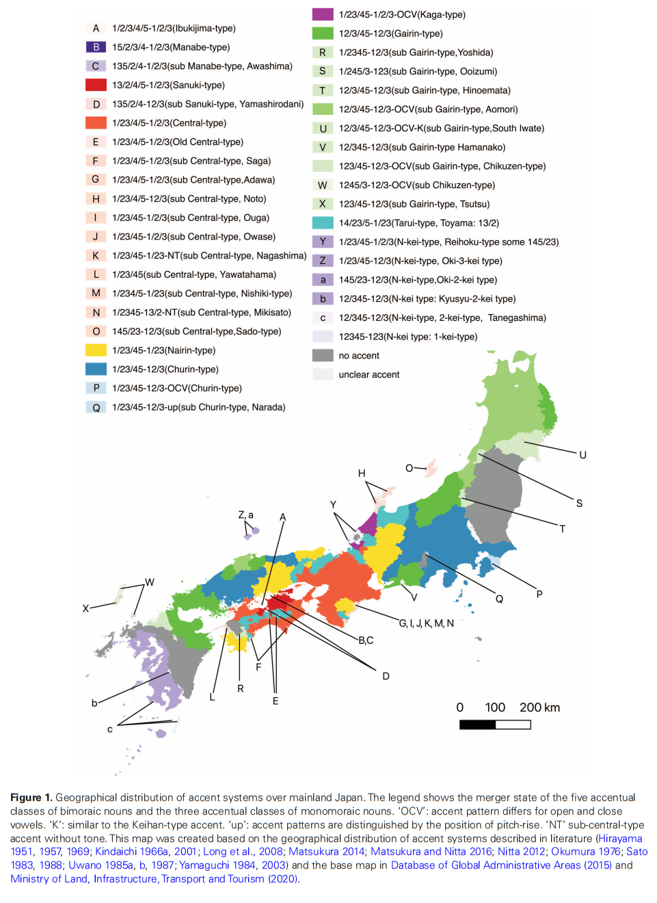
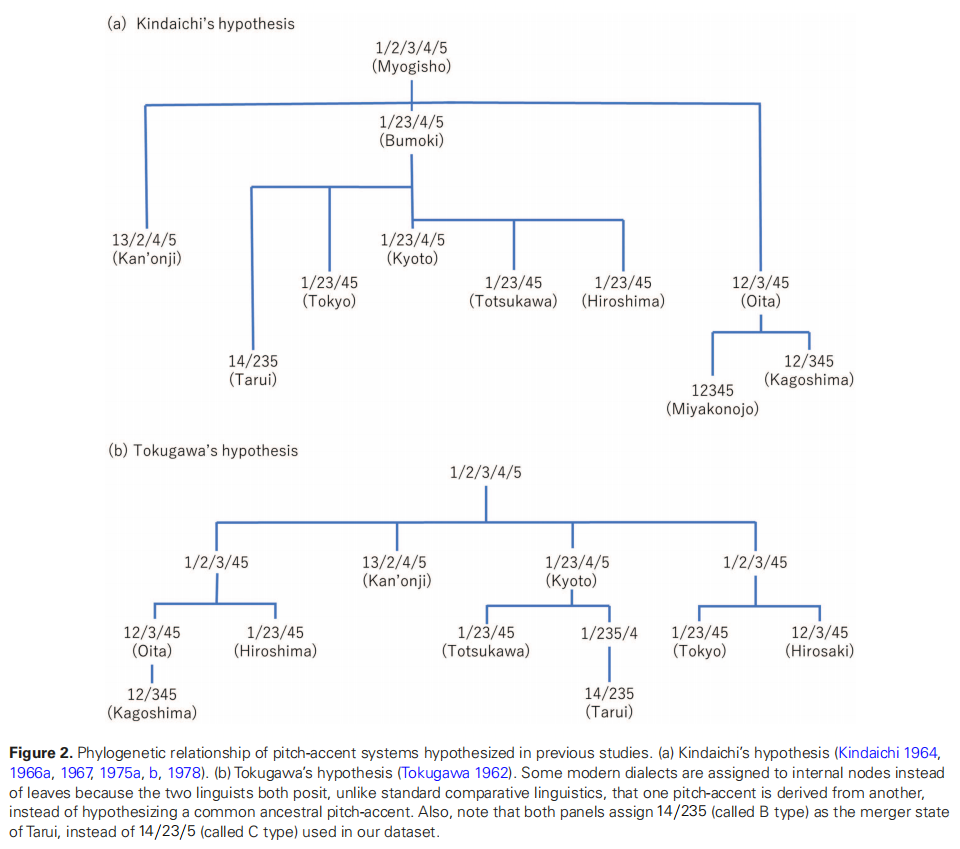
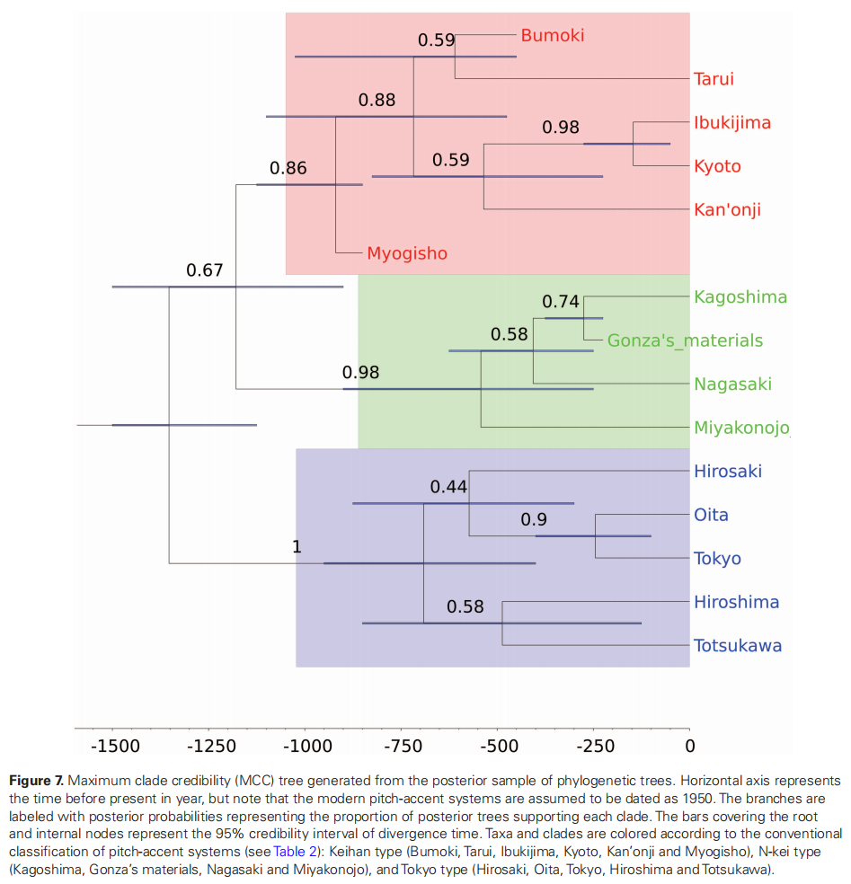
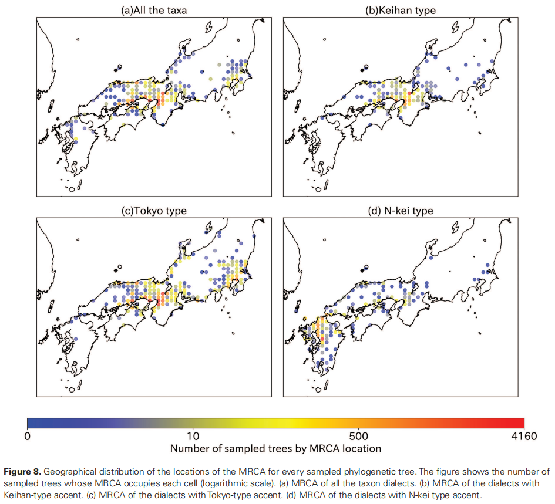

第二章 音高重音
本章详细分析日语和琉球语中的调式、分布以及音调演变。音调系统的发展是日琉语发展的一个侧面，只有结合音调的发展来分析，才可一窥日琉语发展的进程。本体系支持 Ramsey/de Boer 理论，日本学界则以标准理论为正统。
调式
音高重音
重音（accent）分为三种类型：强弱重音（stress-accent）、音高重音（pitch-accent）、长短重音。当调（tone）、强弱重音、音高重音一同比较时，有两个主要的区分标准：凸显性（culminativity），每个词汇至多有一个音节被标记为最凸显的音节；强制性（obligatoryness），每个词汇至少有一个音节被标记为最凸显的音节。调皆无，音高重音无强制性，强弱重音兼有。调包含音高重音，音高重音包含强弱重音。标准语（以及现代大多数日语方言）的调式属于音高重音。
音高重音可以视作受限制的调，表层形式为 /H/ vs /Ø/ 调的对立，/Ø/ 调的实际音高可以很多样。中古日语的音调是未受限制的调（音节调），没有规定哪个音节要承载重音，/H/ 和 /L/ 调都是活跃的，可以将音高重音视作经历了「重音化」过程的调。反过来，不是所有受限制的调都是音高重音，如野崎、九州方言、琉球语，仍为音调：野崎存在非连续 H 音高，与重音的凸显性定义相悖；九州、琉球的「词调」并不强调重音的位置。
现代日语的语境中，「アクセント（重音）」被用来指代「音调」，为便于叙述，下文直接以音调代称。音调的差异可以区分同音词的不同含义和在句子中充当的不同成分。
现代日语调式
日语存在多种调式（音调系统，tone type），最早可追溯至记载了早期京都方言音调的中古《类聚名义抄》（1081），其传承为《补忘记》（1687）。金田一春彦的「标准理论」主张，各种方言的调式均源自《类聚名义抄》。他根据中古日语单词的音调差异，划分出不同的「调类」（tone classes），简写为 x.y 形式表示，x 代表音拍数，y 代表该拍数下的具体类型。本体系大致遵循 Martin（1987）的划分，单音节三种、双音节五种、三音节七种。Martin 的划分基于金田一、和田（1955），承认若干子调类的划分：服部（1951）根据声点材料提出的 3.5a, 3.5b 调类，早田（1973）根据现代方言的反映提出的 2.2a, 2.2b, 3.2a, 3.2b, 3.7a, 3.7b 调类。由于1.3b, 3.5b调类包含的名词数量较少，通常 1.3, 3.5 直接指代 1.3a, 3.5a。现代方言调类的合并模式对于区分方言分支具有重要意义。
现代日语的主要调式有：京阪式（甲种音调）、东京式（乙种音调）、鹿儿岛式。琉球语的调类合并模式较为独特，但存在外轮东京式的影子。
现代大部分京阪式和东京式方言的音调根据 /H/ 调的位置辨别。传统上，/H/ 调被称作「核」（准确地说，是「下核」）。核可分为上升核（上がり目）和下降核（下がり目），上升核包括上核（上げ核，下一音拍或音节为 H）和升核（昇り核，本音拍或音节为 R），下降核有下核（下げ核，下一音拍或音节为 L）和降核（降り核，本音拍或音节为 F），/H/ 调的位置在 L 的前一个音节上，H 与 L 之间存在较明显的音高降落（传统所称「滝」（瀑布），de Boer 记作撇号 '），该位置的有无定义了起伏式和平板式调类；/H/ 调的有无定义了无核型和有核型的调类，分别对应 de Boer 的「/H/ 调」调类和「/Ø/ 调」调类（H = High，高；L = Low，低；R = Rising，升；F = Falling，降）。
| 说明 | 图（点击放大） |
|---|---|
| 方言调式分布 日本語のアクセント分布図（日本語の説明付き）. 2 Feb. 2011. Wikimedia Commons. |
 |
东京式
东京式音调是 /Ø/ vs /H/ 对立的调式，具有下列特征：
- /H/ 调限制：一个词中最多只有一个 /H/ 调，其余音节均为 /Ø/ 调。
- /H/ 调预期音高：/H/ 调之前的 /Ø/ 调可能有 H 音高。使得 /H/ 调位置需通过 H 到 L 下降的位置来识别。从 L 上升到 H 的位置可能因方言而异，并非所有东京式方言都存在 /H/ 调预期音高，如名古屋方言中，≥ 2 个音节的单词中，/H/ 调预期音高从第 2 个音节之后开始；秋田方言中，仅 /H/ 调音节本身具有 H 音高。
- /Ø/ 调自动音高上升规则：许多东京式方言的 /Ø/ 调的实际音高是自动确定的，在首音节后自动上升；有些方言（秋田、奈良十津川的一些村庄（折立、平谷、重里）等）中，这些单词的音调是平板的；青森方言中，/Ø/ 调词的末尾音节才有 H 音高，如果附着助词，H 会移动到助词上。
- %L 边界调：许多东京式方言中，如果词首非 /H/ 调，该词会自动具有词首 L 音高，在这个 L 之后，音高变为 H，直到 /H/ 调后下降。
因此东京式（京阪式亦然）存在表层形式与实际音高的区别：表层形式为 /ØØHØ/ 调的单词的实际音高是：标准语 LHH'L，但秋田则是 LLH'L。
在标准语和许多其他的东京式方言中，/Ø/ 调单词在首音节后自动音高上升其实不甚明显（在最早记载了东京式音调的山田美妙《日本大辞书》（1892）中，/Ø/ 调都被记作 L，也没有提到词首音节后的音高上升；这也造成在没有其他音高对比时，如对于孤立的单音节名词，难以分辨不同调类的差异），因此，东京式音调曾被分析为具有三个调级：/H/, /M/ 和 /L/（三级分析）。由于 M 和 H 的音调差异只能在缓慢、仔细的发音环境中听到，现在通常将东京式音调分析为只有两个调级（两级分析）：/H/
和 /Ø/。因此 /Ø/ 调词的实际音高标记也不能代表其真正的音高。
东京式音调存在三个主要子调式（金田一春彦（1977）、上野善道（1981））：内轮东京式、中轮东京式、外轮东京式（简称内轮式、中轮式、外轮式），以京阪式音调为中心呈周圈分布，形成三个同心圆。
表格 | 标准语附着助词 =ga 的双音节词音高
金田一在给名词的不同调类分配数字时，句点后的数字 1 被保留给了京阪式和东京式音调中的 /Ø/ 调：只有内轮东京式与京阪式一致；随着从内轮向外轮移动，越来越多的调类为 /Ø/ 调。对三音节名词而言，内轮和中轮的分合相同，外轮的不同在于 3.2 调类为 /Ø/ 调，与 3.1 调类合并。
现代内轮东京式分布在本州的 4 个不相邻地区：
- 在京阪式音调东北部，从名古屋向北延伸到岐阜、泉、高山等地。
- 能登半岛。能登也存在内轮东京式的一个特殊子调式：2.4/5、3.6/7 调类没有合并，这种调式虽然保守，也有创新。
- 在京阪式区域的西侧，从峰山、和田山、丰冈向西南延伸的地区。
- 完全被京阪式音调包围的十津山、冈山、尾道。十津川似乎有保存原本音调系统的天赋：在北海道的新十津川（来自十津川的移民）同样在外轮东京式的包围中保留了内轮东京式。
中轮东京式分布在 3 个地区：
- 本州京阪式、内轮东京式音调的东侧，从冈崎到丝鱼川、松本、前桥、桧枝岐、甲府、静冈、小田原、伊豆、横浜、东京、千叶。
- 本州京阪式、内轮东京式音调的西侧，从日本海沿岸的鸟取、中山向西南到广岛、浜田、山口、下关。
- 四国西南地区的宇和岛、中村、宿毛，与岛上其余京阪式区域毗邻。
外轮东京式分布在4个相隔较远的地区：
- 本州东北，从长野、新潟（通常被认为是中轮和外轮的过渡区域）、山形向北到秋田、青森和盛冈、北海道。
- 本州中部太平洋沿岸的天龙、丰桥、掛川、浜松。（三河-远江）
- 本州西部日本海沿岸，岛根的米子、松江、出云、江津。（出云）
- 九州东北部的北九州、大分。与该区域毗邻的是博多-福冈子调式，其调类异常合并为 2.1/2/3 vs 2.4/5，并且合并的 2.1/2/3 调类异常存在 /H/ 调（而 2.1 调类是 /Ø/ 调的）。
外轮东京式存在两种子调式：面积较小的外轮东京式 A 和面积较大的外轮东京式 B（东北式）。外轮东京式 A 分布在岛根、九州东北部、浜松的太平洋沿岸、岩手下北半岛的太平洋沿岸、向西至盛冈。外轮东京式 B 分布在松江、出云、东北大部分、北海道。A 型保留在岛根两侧，B 型占据岛根中心，说明 B 型是创新的。外轮东京式 B 出现在日本海沿岸两个独立的区域，可能与该沿岸的航线有关（历史上的出云-东北交流），因为日本海沿岸水域的通航能力比太平洋沿岸水域更强。外轮东京式
B 的 /H/ 调在 ≥ 2 个音节的词中向右位移一个音节，除非成为承载 /H/ 的音节中包含高元音（/i, u/）。此现象也见于千叶房总半岛的中轮东京式方言和四国的京阪式方言等。
有些方言的调式偏离了东京式，如雫石、奈良田。这些调式由类似的东京式发展而来，但音高分配规则迥异。雫石式发展自外轮东京式的变体秋田式：/H/ 调后的 /Ø/ 调具有H音高（/H/ 调是升核）、存在 L% 边界调（尾音节自动有L音高）；奈良田式从中轮东京式派生，发生了几乎完全的音调反转。
京阪式
京阪式音调与东京式音调有许多共性：如存在 /Ø/ vs /H/ 对立和 /H/ 调限制。两者的重要区别是：京阪式的音高下降规律地出现在东京式的前一个音节、京阪式音调不存在 %L 边界调。因此，京阪式中 /H/ 调之前的所有 /Ø/ 调音高都是平板的 H（传统所称高起式、平进式），如 /ØØHØ/ 的实际音高是 HHH'L。京阪式的 /L/ 调仅在词首存在。与东京式类似，京阪式的音高上升并不明显，以 /L/ 调起首的词语会在最后一个音节前自动上升到 H 音高（传统所称低起式、上升式）。在许多京阪式方言中，因为单音节词自动元音延长，孤立单音节名词的 /L/, /H/, /Ø/ 调之间的区别是可以听辨的。大多数情况下，京阪式音调的词首 /L/ 调对应东京式音调的词首音高下降的音节，京阪式的词首 /L/ 调可以视作在词首音节的前一音节发生音高下降。这不仅是通过对比东京式的发现，京阪式本身存在证据：
表格 | 京都方言被前置修饰的词首 /L/ 调词语的实际音高
大多数京阪式方言还保留了几乎所有东京式方言已经失去的 2.4, 2.5 调类、3.6, 3.7 调类的区分。也有失去这种区分的京阪式方言：池原、大濑、尾鹫、三浦等；也有保留区别的东京式方言：能登等。因此，保留古老的区别并不能判断一个方言的音调是京阪式还是东京式，/H/ 调在不同方言中的相对位置才是唯一、真正的标准。
京阪式音调分布在中央日本一个相对有限的区域：京都、大阪、神户（所谓近畿地区）及周边的大塚、彦根、姬路、和歌山、津；四国东北、一些濑户内海岛屿、佐渡岛。佐渡岛曾是白银开采重镇，与京阪地区密集的海上贸易往来（北前船贸易）可能是岛上分布京阪式音调的原因。
分布在京阪周边的京阪式音调最为典型，其 2.2/3 调类已合并，但在四国和一些濑户内海岛屿上的子调式，其 2.2/3 调类尚有区别：伊吹岛是现代唯一能区分中古的 5 种双音节调类的方言。与之非常接近的真锅岛式，分布在濑户内海的三个相邻岛屿上：真锅岛、佐柳岛、高见岛。该调式的 2.2/3 调类尚有区别，但 2.1/5 调类已合并（佐柳岛、高见岛的 1.1/3 调类也发生了合并）。在这三个岛屿周围还有一小群岛屿（粟岛、本岛、手岛），其 2.1/3/5
调类都合并为了 /Ø/ 调。
四国高知的调式属于比较典型的京阪式，虽然在高松岛附近的丸龟、观音寺、新居浜、池田（赞岐式）的 2.1/3 调类已经完成合并，但 2.2/3 调类仍有区别。东赞岐方言的 /H/ 调右移被高元音阻塞的现象，与某些东京式方言类似。
17 世纪后，京都方言已经将三音节名词的原本落在第二音节上的 /H/ 调左移了一个音节。《补忘记》（1687）中，这种左移还没有发生，而如今的京阪式方言，如高知、和歌山、大阪、兵库等都保留了《补忘记》的阶段。
在京阪式方言与东京式方言接触的地方，到处都有 1.1/3, 2.1/4 调类合并的过渡调式（也称垂井式）。
表格 | 《日本国语大辞典》中的音调表记
在《日本国语大辞典》中，东京式中，[n] 表示 /H/ 调所在的音拍；京阪式中，[0] 表示平板高调，[n] 表示高平板但在第 n 音拍后出现音高下降，用 (0) 表示低起式，(n) 表示在首音拍后音高逐渐上升但在第 n 音拍后出现音高下降。
N 型
鹿儿岛式（亦称九州西南部式）音调中，重要的不是词中从 H 到 L 音高过渡的位置，而是两种不同的整体词调（word-tone）A/B 之间的差异，其划分与分布在大分市和北九州市周边的外轮东京式对应：外轮东京式的 /Ø/ 调类对应鹿儿岛式的 A 调类，含 /H/ 的调类则对应 B 调类。这种存在两种词调区别的调类传统上称作「二型音调」，存在 N 种区别则称为「N 型音调」。
九州和琉球地区的所有方言都合并了 2.1/2、3.1/2 调类，这也是外轮东京式的典型特征。从中轮东京式发展而来的隠岐知夫式，其 2.1/4/5 调类的合并导致调式向二型音调发展：1.1/2 vs 1.3 和 2.1/4/5 vs 2.2/3。隠岐岛上的其他方言以 /H/ 调的位置划分调类，仍然接近于中轮东京式：单音节名词为 1.1/2 vs 1.3，双音节名词为 2.1 vs 2.2/3 vs 2.4/5，这些调式似乎正在往区分三词调的系统发展。这种调式传统上称作「三型音调」。
词调的旋律在不同方言间可能大相径庭。鹿儿岛以南的萨摩枕崎方言、种子岛西之表方言的旋律与鹿儿岛方言几乎完全相反，但名词中两个不同的词调的划分是相同的。
琉球语的大多数方言的音调也是根据词调，而不是根据 /H/ 调在词中的位置区分的。但琉球语中的调类以不同的方式融合，词调往往较九州方言更繁多，通常有三种以上。
宫崎县都城市、鹿儿岛县旧志布志町等地存在统一的音调（一型音调）。东北南部、关东东北部、八丈岛、静冈县大井川上流域、福井县岭北地方平野部、九州中部（宫崎县等）等地的音调已失去辨别功能（崩坏音调、无型音调）。
垂井式
本州存在一些介于京阪式和东京式之间的过渡调式，分布在京阪式区域的东西两侧的狭长地带（平均 25 公里）中。上野将这些方言调式称为「垂井式」，因首次描述于垂井村而得名。此外，十津川周边的一些村落、四国岛西角亦有分布。四国的垂井式已与岛上的京阪式分离，二者以无型音调相隔，四国的垂井式和无型音调可能都是岛上的东京式和京阪式相遇的结果。类似地，九州和本州的其他无型音调也源于两种不同调式的相遇。
在垂井式中，部分调类发展出类似京阪式的左移，部分则未左移，或发展出 /Ø/ 调，异常调类多为在京阪式中发展出词首 /L/ 调的调类。
表格 | 垂井式对比
第一组方言（传统的 A 型）中，无需发展出 /L/ 调的调类（即第一个音节上没有 /H/ 调者）与京阪式一同发生了 /H/ 调左移，反之则与东京式一致，导致 2.2/3/4/5, 1.2/3 调类分别合流。单音节名词调类的合并模式与内轮东京式一致，但是似乎不存在 2.4, 2.5 调类分离的调式，因此垂井式可能源自较现代的内轮东京式，而非较古的野崎式。该调式见于十津川北部边界的坂本、中谷（天川村）、松山、おはか。据上野，还见于琵琶湖以东的京阪式与内轮东京式相遇的地区：近江、米原、虎姬、藤桥；兵库西部边界，处于京阪式与内轮东京式相遇的地区的福良、末包（佐用町）；四国的吉田、西土佐（1.1/2 调类已经合并，故不可能发展自中轮东京式）。
第二组方言中，1.2, 2.2/2.3 调类左移，首音节带 /H/ 调的调类因左移失去 /H/ 调并与 /Ø/ 调合并。在这种失去 /H/ 调的调式中，根据 2.5 调类的反映，又分出三种子型：2a 组，2.5 调类变成了 /Ø/ 调，如琵琶湖东边的今须、四国西部的八幡浜。2b 组（传统的 C 型），2.5 调类首音节 /H/ 调失落，允许第二音节的 /R/ 调变成 /H/ 调，但在不同方言中有形式多样且不与其他调类合并：HH', HH'-L; HF', HH'-L; HF', LH'-L; HH', LH'-L。该调式见于本州京阪式东边的高浜、小浜、大浦、木之本、上草野村、柏原；西边的天和；十津川南边的みさと、栉峠、いちき、新宫、粟田；中央四国的东祖谷山、木頭、久保川、名野川。由于该调式保留了 2.4, 2.5, 3.6, 3.7 调类的区别，因此不能源自较现代的东京式。赤穗 3.7 调类的首音节 /H/ 调失落，但由于尾首音节 /H/ 调左移到第二音节，导致 3.2/3/4 调类合并（3.3 调类似乎可以追述到《类聚名义抄》中的同化形式 LHH）。2c 组（传统的 B 型），2.5 调类首音节 /H/ 调失落，但第二音节的 /R/ 调左移到词首变成 /H/ 调，导致 2.2/3/5 调类合并。该调式见于十津川北部边界的西日浦；京阪式西部边界的千种、落山、くろい、绫部、真出；东部边界的敦贺、长浜、关原、垂井、四国的中津。总体来看，无法左移 /H/ 调的调类，要么不左移（保留东京式的原有 /H/ 调位置），要么左移后失去 /H/ 调并与 /Ø/ 调合并。
此外，十津川东部的池原、尾鹫、相贺、しまかつ、三浦、仁后等地区不存在2.4/5调类区分，可能因左移过程传播较晚，这些地区的方言类似十津川，2.5调类尾音节 /R/ 调已失落，合并后的 2.4/5 调类多采用区分 2.4/5 调类方言中的 2.5 调类。
京阪式东北边界的今庄，其 1.1/2, 2.1/2/3 调类均合并，推测左移合并前的调类形式为：1.1 /Ø-Ø/ L-H, 2.1 /ØØ/ LH, 1.2 /R-Ø/ L-H, 2.2/3 /ØH/ LH。
能登方言调式
能登方言在金田一论证标准理论的过程中发挥了重要作用。金田一（1975, 1983）认为能登保留了从京阪式到东京式发展过程中的一些中间阶段：
表格 | 金田一所见能登方言调式之发展
石崎式分布在能登半岛东海岸和能登岛。野崎式和幸田式也在能登岛上。通常的能登半岛式也可以在岛上找到。能登方言调式可能源自古老的东京式，如野崎式或者内轮东京式。在能登岛，首音节在仔细发音中倾向于降低，这是由于主导调式的影响。在简化 2.5 /HR-Ø/ HL-H, 3.7 /HØH/ HLH 时，幸田式和石崎式采用了不同的策略：幸田式与大多数东京式一样，消除了尾音节的 /R/ 调和 /H/ 调；石崎式与其他能登方言调式一样，消除了首音节的 /H/ 调（首音节音高下降规则），也许正是首音节 /H/ 调的自动降低，能登方言的 2.5, 3.7 首音节 /H/ 调才得以保留。野崎式首音节的 /H/ 调正走向消亡。区分 2.4/5, 3.6/7 调类通常被认为是京阪式的典型特征，因而这种区分可能是一种创新，这也是 Ramsey 理论的观点。
如果一个词语的第二音节由浊辅音 + 高元音（记作「ZI」音节；某些方言中是清辅音 + 高元音，记作「CI」音节）组成，某些调类会出现条件变体，这种特殊音节通过以下两种方式影响词语的音调：如果该音节含 /H/ 调，则 /H/ 调左移一个音节；如果该音节有连续 H 音高，则抬升前一个音节的音高。
表格 | 能登方言调式的特殊音节的反映
特殊音节由抑制性（depressor）辅音 + 高元音组成，导致元音缩短，在很多日语方言中会避开 H 音高。因此，在 2.2/3, 3.3/5 调类中，将 /H/ 调从这些音节左移一个音节可以避免 H 音高落在抑制性音节上。而在 2.1, 3.1, 3.2/4 调类中，抑制性音节本身的音高没有降低，但抬升了前一个音节的音高。这种发展可以视为一种避免抑制性音节的音高高于周围音节音高的策略。实际上 2.4, 3.6 调类的特点似乎是在词尾上升到 H，而不完全是平板 L 音高。
能登方言的单音节在独立使用时，与大多数东京式方言类似，在词首 /Ø/ 调后音高上升，但该规则不适用于附着助词的情形。尽管石崎式和野崎式比其他能登方言调式更古，但在单音节名词中保留的调类对比更少。de Boer 猜测，在首音节音高下降规则生效时，1.2 调类仍为 /R/ 调（R:-L），由于其首音节音高已经较低而不受首音节音高下降规则的影响。后来，在所有的能登方言中，1.2 调类的 /R/ 调都被简化为 /H/ 调。
富山式
富山位于能登半岛以南，其调式与能登方言调式不同，尤其是在音段特征对 /H/ 调位置的影响方面：/H/ 调位置取决于词中最后或倒数第二个元音的性质：如果包含高元音，则 /H/ 调处于京阪式位置，否则处于东京式位置。能登方言调式中，抑制性音节的条件变体并不代表 /H/ 调的原始位置。类似地，富山式中，很难确定两种变体中哪一种是原始的，这一选择决定了将富山式划分为东京式还是京阪式。
表格 | 富山式
富山式的 /H/ 调位置变化的条件与能登方言调式不同，更像外轮东京式 B、房总半岛的中轮东京式、东赞岐的京阪式中被高元音阻止的 /H/ 调右移，这些调式中高元音的 /H/ 调位置无疑是原始的。如果富山式的高元音的 /H/ 调位置是原始的，那富山式也经历了左移，但通过将 1.3, 2.4, 3.6 调类与 /Ø/ 调类合并，避免产生 /L/ 调，这将富山式归类为垂井式。后来，被高元音阻止的 /H/ 调右移使部分词汇的 /H/ 调位置又回到了东京式的位置。
富山式也有可能是与能登方言调式密切相关的调式。富山式非但没有受到京阪式偏移的影响，反而有了这样的发展：首先，首音节音高下降规则造成了 1.3, 2.4, 2.5, 3.6, 3.7 调类的首音节 /H/ 调丢失。接下来，如果 /H/ 调原本位于抑制性音节上，就向前一个音节偏移。在能登方言调式中，这些音节都是浊辅音+高元音音节。如果在富山式中抑制性音节的定义被扩大到了所有包含高元音的音节，这将解释为什么在富山式比在能登半岛上有更多的词汇的中 /H/ 调被转移到前一个音节。这样富山式的非高元音的 /H/ 调位置是原始的，这将富山式归类为能登方言调式：一个古老的（中轮）东京型方言式（保留 2.5, 3.7 调类的区别)，首先经历了首音节音高下降规则，后来在部分词汇上将 /H/ 调左移。由于 2 种分类都有道理，因此暂无法确定应将富山式归类为东京式还是京阪式。
默认重音分配规则
标准语中，许多外来语词汇的 /H/ 调落在倒数第三个音拍上，McCawley（1968）认为这是日语的默认重音分配规则。如果倒数第三个音节是一个非独立音节（如拨音、促音以及双元音序列中的第二元音），标准语中，这种非独立音节不能承载 /H/ 调，/H/ 调的位置会前一到前一个音拍上。从分音节的观点看，这种非独立音节与前一音拍构成一个音节，因此结果上落到倒数第三个音节，如 paina'Qpuru（菠萝）。类似「倒数第三个音拍重音规则」的是「拉丁语重音规则」，即：若倒数第二个音节为「重」，则 /H/ 调落在该音节上；否则，/H/ 调音前移，落在倒数第三音节。该规则的核心在于「音节重量」概念，在日语中，由 (C)V + 非独立音节，这样 2 个音拍组成的音节为「重」音节（即 CVC），如果仅为 (C)V，则为「轻」。这两个规则都能预测标准语中的外来语词汇音调（有些词汇兼有两种预测音调），且拉丁语重音规则预测的为更常见，暗示日语标准语中外来语词汇的 /H/ 调也遵循在许多语言中生效的拉丁语重音规则。
倒数第三个音拍重音规则也适用于专有名词（人名或地名）中：标准语中，这类词汇或无 /H/ 调，或落在倒数第三个音拍上。这个规律同样适用于汉语词。
外来语的插入音（如 tora'i = 英语 try 中，o 是插入音）也会影响 /H/ 调位置。对于由「轻」音节+「重」音节组成 的词语，如果首音节没有插入音，则 /H/ 调在首音节，否则在尾音节。实践上，如果并非由「轻」音节+「重」音节序列组成，则插入音也可能携带 /H/ 调（如 do'resu = 英语 dress）。
标准语中，截断了一些末尾音节，保留了前方部分音节的词，其 /H/ 调通常会转移到词首音节；截断了一些词首音节，保留了后方部分音节的词，其 /H/ 调通常会转移到词尾音节，或变为 /Ø/ 调。如果截断后的词分别来自两个复合词的前两个音节的组合，则这类词汇通常是 /Ø/ 调的。
奥村（1963）发现，非日常使用的词汇，以及许多从汉字文献中出现的新词在三种主要调式中的音高通常都为 HL：东京 2.4/5 H'L，京都 2.2/3 H'L，鹿儿岛 A HL。
标准理论
声点
声点原本用于表示汉字声调。从左下角开始，顺时针方向，四个角的位置依次对应平、上、去、入，东点在平、上之间，德点在去、入之间。最常用于表示中古日语音调的声点是平声点（假名左下角）和上声点（假名左上角）。某些词还存在去声点（假名右上角）和轻平声点（假名左边中间，也称「东点」，因为汉日音「东」的音调为轻平）。最早给日文假名添加声点的文献据说是《金刚界仪轨》（987 - 989?, 1028 - 1037?）、《建立曼荼罗护摩仪轨》（1040）。
大部分去声标记与 1.3 b 调类的单音节名词有关，一些较长的名词在首音节上有去声标记。11 世纪的声点资料（《类聚名义抄》等）证明，去声可以被分析为「平-上」序列。此外，汉日音证据也可以证明：吴音去对应汉音平；吴音平上对应汉音平平；几乎不存在「上平-上」，但「平上-上」十分常见，这意味着「去-上」中的去声很可能由「平-上」构成，而不可能由「上-平」构成。13 世纪时，去声标记不再使用，「平-上」调也随之消失。
中古的轻平声被认为与去声相反：是「上-平」序列。在最早、最精确的《日本书纪》声点材料中，轻平声点用于标记上平调，但 12 世纪时被上声点代替。尽管轻平声点不再使用，但上平调被认为并未消失。
中古调类的对应
现代方言中，三音节名词的音调对应极度无规律，可能因为这类词汇多是复合词。3.1, 3.4, 3.7 调类通常比较规则，3.2, 3.3, 3.5 调类通常毫无规则。3.3 调类的名词数量极少。3.6 调类在外轮东京式的大分、浜松、中轮东京式的长野规律反映为 H'LL，但在其他的东京式方言中多为 /Ø/ 调。
1.1, 1.2 调类在古老的声点材料中通常标有上声点。区分 1.1/2 调类的根据是，在附着属格助词 =no 时（中古 =no 总是复制前一音节的末尾音高。注意：Martin 的 JLTT 中使用的调类音高表记指的就是附着 =no 的音高），1.1 调类表现为上-上，1.2 调类为上-平，而且现代方言中也作区分。
1.3 调类下分两个子类：1.3a, 1.3b。1.3b是《类聚名义抄》中使用了去声点标记的调类，名词数量较少，且在京阪式中的反映杂乱无章。去声在 13 世纪消亡，现代方言中没有明确的反映形式。至少在中央日本，中古日语的单音节名词已自动延长，被延长的单音节名词的音拍音高似乎是：1.1 上上、1.2 上平、1.3a 平平、1.3b 平上，但这种声点记载十分罕见。
表格 | 1.3b 调类名词
声点材料中 2.4, 2.5 调类的尾音节在通常标有上声点。在一些声点材料中，2.5 调类的尾音节用轻平声点标记，而且在附着 =no 时有不同的表现：2.5 调类接「平」，2.4 调类接「上」。
3.5 调类在古老的声点材料中存在下位区分：平平东、平平上。Martin 也注意到这个区别，他通过东京式的区分来划分此调类：3.5a 子调类在标准语是 LH'L（或者 /Ø/ 调），高知是 H'LL；3.5b 子调类在标准语是 H'LL。但难以证明中古日语中 3.5 调类的两种不同的声点标记与东京式的分裂之间存在联系，因为中古「平平东」在现代东京式的反映罕见且多为复合名词（反映通常不规则）。
表格 | 中古调类在现代的对应（附着助词）
上表中，词汇的附着部分是中古单音节助词 =wa, =ga, =wo, =ni，在《类聚名义抄》、《日本书纪》等古老的用例中普遍带有上声，那时助词还没有受到前接名词音调的影响。音调演变出创新类型后，古老的类型并没有消失。14 世纪，京阪式、现代内轮东京式地区的这些单音节助词的调仍为上声，为中古内轮东京式的特征。在一些声点材料中，在「上平」调词后，这些单音节助词的调不是「上」而是「平」，这种「上平」调的词包括 1.2, 2.2, 2.3, 2.5 调类（该变化发生在 1.2, 2.5 调类中的，为中古中轮东京式的特征；也发生在 2.2, 2.3 调类中的，为中古外轮东京式的特征）。de Boer 将中古日语声点材料归纳为以下类型：
- 平声没有向附着助词传播（中古内轮东京式）：《岩崎本日本书纪》（1000）、《图书寮本类聚名义抄》（±1080/1100）、《图书寮本日本书纪》（1142）、《北野本日本书纪》（1150）、《前田家本日本书纪》（1150）、《镰仓本日本书纪》（1303）、《前田家本浄弁拾遗和歌集》（1333）；
- 平声在 1.2, 2.5 调类中向附着助词传播（中古中轮东京式）：《观智院本类聚名义抄》（1140-1150?）、《御巫本日本书纪私记》（1278-1293）、《应永本日本书纪私记》（1278-1293）；
- 平声在 1.2, 2.2/3/5 调类中向附着助词传播（中古外轮东京式）：《名语记》（1268-1275）、《古今（和歌集）训点抄》（1305）；
- 平声在 1.2, 2.5 调类中向附着助词传播，有时也在 2.2/3 调类中向助词传播（混合的中古中轮-外轮东京式）：《伊达家本古今和歌集》（1226）。
标准理论及其问题
金田一春彦（1951）认为中古音调类似现代的京阪式，因为京都是古都，且京阪式保留了古老的调类区分。他构拟晚期中古汉语音调为：上声 = /H/，平声 = /L/，去声 = /R/，轻平声 = /F/，鹿儿岛式的 A/B 分别对应中古上（/H/）/ 平（/L/）开头的词语。
中古向现代京阪式音调的转变在 17 世纪已基本定型，这在《补忘记》中得到了印证。金田一假定现代京阪式变化较小，基于《补忘记》式，除去词首以外的音高下降，通过「/H/ 调右移」（实际上包含两种不同的变化）可以得到东京式：2.2/3, 3.2/4, 3.3/5 调类的 /H/ 调右移（山の後退）；2.4, 2.5, 3.6, 3.7 调类的词首 /L/ > /H/ 的转变（語頭隆起）。他基于对能登方言调式的观察，构拟了从《补忘记》式到东京式的变化过程，表面「/H/ 调右移」是对结果而言的。但他未给 2.3, 3.4, 3.5 调类构拟从 /H/ 调到 /L/ 调的过渡，而现代京阪式和东京式存在这种过渡，且京阪式的过渡在东京式的前一个音节。金田一假设先有 /H/ 调产生，然后发生 /H/ 调的右移，造成东京式从京阪式分裂出来。
标准理论的中古音调似乎早于日琉语的音调祖形。由于京阪式 2.3, 3.4, 3.5 调类的 /H/ 调在 13 世纪末至 14 世纪初才首次证实，意味着所有现代方言音调都可以追溯到这一时期。但现代外轮东京式地区的调类合并方式典型的中央日语调式迥异，导致这个过程又不像在 14 世纪之后才开始。因此，标准理论的中古音调不适合作为现代方言音调发展的起点，不能将其等同于日琉语的音调祖型。但金田一认为，音调祖型与标准理论构拟相似或相同。
金田一认为，/H/ 调之所以在三个东京式子调式的 2.3, 3.4, 3.5 调类有相同的位置，是因为演变出外轮东京式所需的变化在外轮东京式的不同区域多次独立发生。这些变化涉及：2.1/2 调类的合并、3.1/2 调类的合并、2.3, 3.4 调类的词首 /L/ > /H/、3.5 调类的尾 /H/ 调失落及词首 /L/ > /H/、所有的 /H/ 调右移一个音节。中央东京式只经历了后三个变化。
标准理论存在以下问题：
1. 存在 2 个连续词首 /L/ 调的 2.3, 3.4, 3.5 调类的词首 /H/ 调自然增生
服部（1951）认为，《类聚名义抄》记录的中古日语音调是京阪式的较古阶段，后来在京阪式增生 /H/ 调的调类的音高是：2.3 ML, 3.4 MML, 3.5 MLH。早田辉洋（1973）主张，现代东京式的发展如下：在中央东京式中，/M/ 调发展出全音高下降（/M/ > /H/）后，开始右移。在外轮东京式中也如此，然而由于某种原因，2.2,
3.2 调类中的全音高下降失落了（/H/ > /Ø/）。该观点没有被广泛接受，或许是因为尽管具有区别性的 /M/ 调在所有现代方言中都留下了反映，但却从未被声点材料记录过。
2. 存在单个词首 /L/ 调的 2.4, 2.5, 3.6, 3.7 调类的词首 /L/ 调向东京式词首 /H/ 调自然转变
在其他语言中（包括现代日语方言）发生的音调发展表明，/L/ 调右移时通常伴随右扩，而非变成 /H/ 调。
3. 东京式的 /H/ 调自然右移
京阪式的 /H/ 调位置在中央日本（近畿、四国东北、佐渡）以外的区域都没有保存下来，在标准理论的背景下，东京式的 /H/ 调的右移必须是在广泛分散的地区独立发生的。
4. 京阪式 3.2 调类在其他调式中的对应问题
这与 17 世纪以来京都三音节名词的某些创新有关，使得现代京阪式音调不适合作为东京式发生右移前的形式：在现代京都，3.2/4/5 调类已经合并（高知则是 3.2/7 调类合并），但在三个东京式子调式中却都不如此。标准理论难以解释高知 3.2 调类的词首 /L/ 调。实际上，这种发展的分布非常广泛：在本州的大部分、甚至可能在所有京阪式方言中都能找到。就京都而言，3.2 调类虽说是
H'LL-L，实际上以 'LH'L-L 占优；和歌山、大阪则是 HH'L-L, 'LH'L-L。平山（1988）记录到，3.2/7 调类的合流发生在一个广大的区域：包括京都、五条、田边、有田、本宫。即使是《补忘记》式中也存在混合的反映：3.2 higasi（东）HH'L, midori（绿）'LH'L, HH'L。因此，京阪式可能在 17 世纪之前就已经发生了 3.2 调类的分裂，合并到 3.7 或者 3.4 调类中。标准理论不仅无法解释3.2
调类发展为 'LH'L，也无法解释京阪式方言中 3.2 调类分裂的原因。这些理由说明，东京式不可能由京阪式发展而来。
5. 琉球 B/C 调类分裂
标准理论还无法直接解释琉球的 B/C 调类分裂。如果要将琉球特殊的音调发展历史套入标准理论，需要进一步将本土对应的各种 B 类音调划分出更多子调类。许多学者致力于此划分工作，特别是日本学界。如果利用 Ramsey 理论，则不需要如此划分。
服部四郎（1933）最早区分日语方言调类，将京阪式、东京式分别称作甲种和乙种音调。尽管他认为京阪式更古老，但也指出东京式从地理分布上看似乎更古老。后来，服部（1951）主张两种调式都非最古，并提出中古日语存在 /M/ 调的观点，但未被广泛接受。同时期，金田一通过结合两个截然不同的理论推广了东条的主张，使方言调式的特殊地理分布合理化：方言周圈论解释词汇变化，方言区分论解释语法和音韵的变化，确立了京阪式是日本最古老调式的标准理论。
然而，由于标准理论忽略方言地理证据，尽管被广泛接受，仍有许多学者尝试优化。这些优化理论中，构拟的音调祖型要发生的音调变化极其复杂，东京式必定经过多次独立发展而来，构拟的音调祖形没有一种接近东京式，也无法解释为何非连续分布的东京式支配了日本列岛。相反，如果将京阪式音调视作创新，则无需假定环绕京阪式的地区发生多次独立平行的发展。
逆转标准理论的尝试
《古事记》存在用去声、上声点标记 11 世纪的平声点的现象，这种声点只出现在一些特定的人名、神名、地名中。大原（1951）据此认为东京式可能至少在 8 世纪前出现，并在 11 世纪（最早的声点资料出现的时期）之前，京都及邻近区域已经发生了 /H/ 调左移。江户时代前中期的契沖、本居宣長认为这是「发音异常」，这也是主流的观点，因此这些声点并不被普遍认为是上代日语出现类似东京式音调的证据。
de Boer (2024) 指出，《古事记》存在特定声点标记的人名、神名、地名绝大部分属于 2.3 调类名词，且多与出云或其他西日本地区，部分与出云大社主神素戋呜尊有关。这些迹象表明，此类标注可能是 /H/ 调限制的前奏——即 2.3 调类名词从 /HH/ 转向 /LH/。现存最古《古事记》抄本追溯到 14 世纪，如果假设文本被忠实传承，这些声点标记或许反映了早期抄写者听非畿内居民诵读时的诧异。另外，特定声点标记的人名与继体天皇存在关联（祖先、儿子），而继体天皇被历史学家普遍视为篡位者：并非源自中央日本皇统，而来自出云同盟国——越国。
表格 | 《古事记》记载的名词音调
高山伦明（1981）提出反论，指出《日本书纪》使用的万叶假名和声点基于以晚期中古汉语为原型的「汉音」，并认为其在一定程度上（取决于其中的哪个部分）表现了日语当时的音调，与后来的《类聚名义抄》等文献的音调无本质区别，加之《纪》《记》表现的是都是 8 世纪中央日本的方言，进一步支持了《古事记》发音异常的观点。
高山的发现将《类聚名义抄》的调式上推至 8 世纪，这意味着京都必须在 8 世纪之前就发生了重大的音调转变。然而，8 世纪前后被引进日语的汉字音（汉语借词）的音调也随着固有词一起参与了历史上的方言调式发展。这就出现了矛盾。
奥村认为中古汉语声调在一定程度上决定了汉日音的音调。中古汉语声调在现代朝鲜汉字音、越南汉字音中仍有明显的体现。但在日语中，中古汉语声调与现代汉日音音调所属的调类之间未呈现明确关联。但这些汉日音也参与了方言调式发展，意味着东京式与京阪式的分离时间必须晚于这些借词借入的时期，即 8 世纪以后。
表格 | 一些汉日音的音调对应
Ramsey/de Boer 理论
Ramsey 理论
Ramsey（1979）主张京阪式发生了 /H/ 调左移，推测此变化发生在 11 世纪之后，可能在 15 世纪。当时，声点因使用混乱而被放弃。他也主张中古日语音调类似音调祖形，但与标准理论有着根本性的区别：他构拟的声点的音高与标准理论完全相反。他认为晚期中古汉语声调对构拟中古日语音调的音高毫无作用，因为晚期中古汉语声调的确切调值难以知晓。他注意到，中古日语与现代日语中任何一种方言之间最常见的音调对应关系，是中古日语的「平-上」序列与东京式的音高下降的规律性对应关系，从而推断平声点表示
/H/ 调，上声点表示 /L/ 调。虽然他没有直接给出轻平声点和去声点的音高，但根据其构拟，去声点（= 平上）必然对应 /F/ 调，轻平声点（= 上平）对应 /R/ 调。如果认为现代京阪式音调是在 11 世纪之后发展起来的，可自然地解释现代京阪式和东京式的地理分布。
现代大部分东京式的每个单词只允许存在一个 /H/ 调，说明在从中古日语音调到现代东京式的变化中，/H/ 调数量减少了。Ramsey 认为，京阪式只能从古老的东京式（如野崎）发展。基于 Ramsey 的构拟，左移一个音节就可以预测现代京阪式音调。标准理论的许多问题得到了解决。
Ramsey 理论还可以统一解释东京式的三分过程：首先，/H/ 调在某些方言中扩散到 /R/ 和 /LH/ 调之后的助词上。/R/, /LH/ 调的尾 /H/ 调向附着助词传播是外轮东京式的发展根源，/R/ 调的尾 /H/ 调向附着助词传播是中轮东京式的发展根源。
然后，所有方言都发生了 /H/ 调限制。最古老的例子是能登野崎的内轮东京式，这个方言保留了 /R/ 调（可区分的 2.5 调类）与多重非连续 /H/ 调（可区分的 3.7 调类），而其他大多数东京式方言，由于消除了这两个特征，导致 2.4/5, 3.6/7 调类合流。
/H/ 调限制为京阪式的左移创造了条件，即向「重音」 /H/ 调与「非重音」 /Ø/ 调区分的发展。通过左移，内轮东京式发展出本州京阪式、中轮东京式发展出四国京阪式。结果，两种京阪式趋于相似。在转换时期，/L/ 调逐渐走向消亡。现代京阪式 /L/ 调多是中央本州东京式发生 /H/ 调限制后又经 /H/ 调左移所复现的，与中古日语中未受限的 /L/ 调并非同源。/H/ 调左移也使京阪式间接保留了
2.5, 3.7 调类。
13 世纪末时已有声点记载印证 /H/ 调限制，15 世纪声点标记出现混乱：吴音出现「反转声点」以匹配当时的音调，这正是京阪式发生 /H/ 调左移的时期。16 世纪初 /H/ 调左移可能已完成。/H/ 调左移也影响了汉日音，尤其是包含平声的调类。《大疏百条第三重续曲》（1563）中的吴音被添加了「当（ataru）」标记。「当」原为声明中的一个音乐术语，在《平家物语》中通常表示低音高，奥村（1981）主张该标记原本用于表示一个被抬升的音高 + 一个被降低的音高；天野（1995）的佛教音乐辞典主张「ataru / atari」主要用于天台宗声明的一个旋律，表示声音强烈、急剧地上升，然后在切断声音片刻之后，或继续保持原来的音高，或改变音高，通常变为更低的音高；小西（1948）解读为「以高起首」，金田一（1943）解读为「被标记者为高，后续音节低」，所有观点都指向「H 到 L 的音高下降」，并强调被标记的音节为 H 音高。如果应用 Ramsey 理论，将会自然理解这正是 /H/ 调左移的结果。
针对 Ramsey 理论的反驳主要源于其反直觉性：中古的声点「上」对应 /L/ 而非 /H/；「平」对应 /H/ 而非 /L/，且与汉日音的声点材料矛盾：日本当代佛教诵经的调值被认为可以追溯到一个从引入天台宗和真言宗的 9 世纪开始的未经间断的传统。如此，Ramsey 理论间接反驳了一个延续了千年以上的传统。然而，不同真言宗的历史表明，目前幸存的声明（古印度五明之一，研究文字、音韵、语法的学问）传统即使古老，最早却只能追溯到 16 世纪晚期，这意味着现代天台宗和真言宗的传统对构拟中古日语调式的作用有限。
还有两个鲜为人知的方言地理证据。其一是早期京阪式地理分布的历史记载。如果将时间越往上溯，根据 Ramsey 理论，京阪式的区域会越来越小；根据标准理论，京阪式的区域会越来越大。第一篇明确提到京阪式和东京式的分裂的文献是金春禅凤（1454 - 1532）的一则未完成的能剧《毛端私珍抄》，比较了当时四个地区的「犬」inu 2.3 的音调。能剧的调式通常是经过左移的京阪式，但偶尔也会使用一些方言调式。文中提到该词在「京」的音调为 HL，「筑紫、坂東」为 LH，「四国」为 HH。此处的「京」也许指五畿内地区，这说明在 1530 年前后，京都的音调已经左移。Ramsey 认为「四国」2.3 HH 与他对中古 2.3 调类的构拟一致，也许此时京阪式的左移还未传播到四国。现代四国赞岐的 2.3 调类是 HH/LL（根据分析方式不同而异），与 2.1 调类合流。由于不清楚赞岐式何时产生，因而不清楚金春所指中古「四国」式为何。João Rodrigues 在《日本大文典》（1604 - 1608）中提到京阪式在五畿内、越前、若狭、丹波、近江、播磨分布，相当于现代的福井、兵库大部分、京都北部。虽然他没有提到京阪式在京都以南区域、四国东部的分布情况，但也许那时京阪式已经传播到了这些地区。因此京阪式的区域随时间推移是由小变大的，而不是标准理论主张的从大变小。
其二是中轮、外轮东京式之间的同言线较其他调式之间更模糊。声点材料表明，中轮、外轮东京式的分裂发生在 13 世纪之前（琉球式发展自外轮式，说明这个分裂早于琉球语的建立和传播），东京式的内部分裂在很早的时期发生。上野（1981）发现，不同调式相遇的地方通常存在一个过渡区域。以新潟为例，在长浜、上越虫生岩户之间存在一条线，虫生岩户只有半数 2.2 调类词语与 2.1 调类合流，另一半与 2.3
调类合流；从此再北上，与 2.1 调类合流的更多，在山北、鼠关，剩下 1/3 的 2.2 调类词语与 2.3 调类合流；进入山形，大部分 2.2 调类词语与 2.1 调类合流，即外轮东京式。同样的渐变也见于东海、山阴、北九州，同样是中轮、外轮东京式相遇引起的。新潟的过渡区比较呈整体性，但其他区域的过渡区更呈连续性。上野推论中轮、外轮东京式间存在较长时间的接触，外轮东京式曾经存在于一个更广大的区域。根据方言周圈论，处于更中心的中轮东京式应为创新，但外轮东京式相对于中轮东京式才是创新。综合同言线模糊的情况得到的结论是：中轮东京式和外轮东京式都有较古老的历史，中轮东京式和外轮东京式的分裂，早于内轮东京式和中轮东京式的分裂，更早于京阪式和东京式的分裂。
de Boer（2010, 2024）进一步发展了 Ramsey 理论，本页面内容主要基于 de Boer 的研究成果。基于此，Ramsey 理论可称 Ramsey/de Boer 理论。
中央东京式的发展
第 1 阶段：即中古调式。
第 2 阶段：/H/ 调限制的出现。由于东京式的 %L 出现在句首，因此 2.2/3 调类词汇在句首是 LH，句中是 HH。13 世纪 2.3 调类出现了大量的 LH 的记载（《寂惠本古今和歌集》（1278）等），说明其词首 /H/ 调失落了。3.5 调类也常被记载为 LHL，而 HHL 罕见。这些记录说明 /H/ 调限制非常激进：似乎所有不紧接 /L/ 调的 /H/ 调都失落了。这类声点材料中，3.4
从 HHH-L 变成了 LLH-L，与现代内轮东京式 3.4 LHH'-L 不一致，暗示这个变化产生得更晚，但仍早于京阪式左移。这种变化导致 3.2/4 调类合流，然而在许多京阪式方言中，3.2/4 调类是保持区分的，说明京阪式的分离早于此变化。de Boer 猜测，中古 /H/ 调限制的原因可能是处于 /L/ 调前的 /H/ 调变成超 /H/ 调（F0 极化），导致非 /L/
调前的 /H/ 调相对不那么高，被重新分析为 M 音高（音系上为 /Ø/ 调）。13 至 14 世纪的声点材料中，该 M 音高可能被用表示 L 音高的声点来表示。由于 /H/ 调变得显著，产生了 /L/ vs /H/ vs /Ø/ 的区别，这导致 /H/ 调的出现变得不同寻常，剩下仅有的 /H/ 调被重音化。一旦重音化的 /H/ 调建立，/H/ 调前的 /Ø/ 音节可能向 /H/
调同化，此过程称作「/H/ 调预期音高（HTA, high tone anticipation）」（此现象可见于非洲 Luganda 语（Hyman 1978））。
第 3 阶段：%L 边界调。历史音调学的停顿作为 /L/ 调原理（Hyman 1978）：停顿边界可以在任何时候引起相邻非低音高下降，当此效应规则化，语言就产生了 %L 边界调。由第 2 阶段产生的 /H/ 调前的 /Ø/ 调，在句中变为 H 音高；在句首受到 %L 边界调的限制，变成 L 音高。这时可将 /L/ 调分析为 /Ø/ 调，这就导致 /H/ vs /L/ 的区别失落，只剩下两种音高，巨大的音高差异变得多余，也许在此阶段，发生了
H 和 L 的音高差的缩小。重音化的 /H/ 调也许使词语发生改变，以突出 /H/ 调的特征：这导致平板调转变为起伏调（此现象可见于非洲 Haya 语），比如在 /H/ 调的基础上发展出 F，这也是许多方言中实际存在的现象。也许 1.3a/b 调类的合流正是因此。
第 4 阶段：/H/ 调预期音高。在有 /H/ 调的调类中，发生了句首音节后的自动音高上升（最终发展为 /H/ 调预期音高与 %L 边界调），并且还应用到无 /H/ 调的调类中。此阶段也是发生京阪式左移的阶段。包含 /LH/ 调序列的调类在这个阶段避免了 /H/ 调预期音高。造成 /Ø/ 调词自动音高上升的原因可能是类比：在不存在 %L 边界调的方言中，不存在这个规则。例如，在秋田、青森，由于缺乏
/H/ 调预期音高，/H/ 调自身的位置就是 H 音高，这就不需要指定 %L 边界调，句首后的 /Ø/ 调音节的音高也不会上升。十津川存在 /H/ 调预期音高：在折立、平谷、重里、小森、上葛川村，含 /H/ 调的词首音节的音高不受处于句中何种位置的制约，可以自由变化（如 2.2/3 HH'-L ~ LH'-L, 3.5 HH'L-L ~ LH'L-L），/Ø/ 调词语的音高是平板的；在上汤川、上野地、小坪濑、风屋村，含
/H/ 调的词语存在 %L 边界调。
第 5 阶段：/H/ 调预期音高通用化，影响到剩余的 /L/ 调，将它们降为 /Ø/，导致 2.2/3, 3.2/4 调类合流。由于这个变化见于所有围绕京阪式的东京式方言，因此这些方言都独立地发生了该变化。野崎未发生第 5 阶段，但野崎的音段特征后来影响了其调式。除了 1.2, 2.5 调类在尾音节出现 /R/ 调，其他所有的 H 和 L 是否能出现都由 /H/ 调和 /Ø/ 调决定。大多数东京式方言都失去了尾 /R/ 调以及词中多重非连续 /H/ 调，但野崎方言保留了这两个特征。在该阶段，如果 /H/ 调在 /R/ 调后向助词传播，就产生了中轮东京式。中轮东京式虽然发生了单音节中的右扩（1.2 调类），但是没发生多音节中的右扩（2.2, 3.2 调类），是因为右扩在单音节中的趋势较多音节更强烈。
表格 | 中央东京式的发展
京阪式的发展
/H/ 调左移：被重音化的 /H/ 调发展为 F 音高，F 使前一音节音高上升为 H，原有的 F 在新产生的 H 后降为 L（左吸过程，Hyman 1978），结果导致 /H/ 调左移，这是 Ramsey 理论不被广泛接受的原因之一。尽管根据松森（1993），音调右移的倾向大于左移的倾向，但京阪式存在可考的 /H/ 调左移：3.4 调类在 17 世纪后 HH'L > H'LL。对比中古朝鲜语、现代南汉江、庆尚方言（Ramsey 1978）可知，庆尚方言发生了 /H/ 调左移。也许京阪式的左移曾仅限发生在一个中心区域，由于首都方言的地位较高而得以扩散到更大的区域中。
/H/ 调左移导致词首 /L/ 调增生：京阪式 /L/ 调的音高标记（'L）的撇号标记出现在 /L/ 的「前一个音节」，是因为京阪式 /L/ 调通常对应东京式的词首 /H/ 调。东京式 /H/ 调后的 /Ø/ 调音高降为L，但京阪式 /L/ 调代表抽象的音位学意义上的音高下降：除非在 /L/ 前存在别的单词，否则不存在可听辨的音高下降。这也是 /L/ 调的起源之一：它是经由首音节左移后的音高下降发展而来的：处于 /H/ 调后的 /Ø/ 调 = L，左移后，L 音高前的 /H/ 调被消除，导致 /Ø/ 调（L 音高）处于词首位置，这便形成 /L/ 调。换言之，左移使 /Ø/ 调分裂为 /Ø/, /L/ 调，复现了消失的 /L/ 调。此 /L/ 调与中古日语不同在于：中古的 /L/ 调不局限于词首音节。并非所有现代京阪式的 /L/ 调都发展自 /Ø/ 调，有些来自第 4 阶段保留在词首的 /L/ 调发展而来，可视作存古。
本州京阪式的 3.2 调类的混合反映：3.2 调类在大部分京阪式为 'LH'L，据称大阪、和歌山为 HH'L，实际上本州京阪式的 3.2 调类似乎是混合的，说明分裂发生在阶段 4 到 5 的过渡期。当一个语音类别分裂时，分裂后的变体在分布上往往存在一种模式，例如基于语义或句法环境（如高知，名词 LLH > 'LH'L，形容词或动词 LLH > HH'L），但在 3.2 调类的两种反映并不存在这种分布模式，因此混合反映的最可能来源是方言干扰（部分学者主张将 3.2 调类划分为 3.2a/b，但这与京阪式内部的反映是不一致的）。假设 3.2 调类在左移阶段存在 %LLH ~ %LHH 自由变体，在不同的群体中可能会发展出不同的结果（LLH > 'LH'L; LHH > HH'L），然后互相干扰，就导致反映的异常。
全 /Ø/ 调被认知为全 H 音高：京阪式的 /Ø/ 调适用自动音高分配规则，但缺少 %L 边界调。%L 边界调的失落可以用左移解释：2.1 %LH-H > %HH-H, 3.4 %LHH-L > %HHL-L，这导致京阪式将全 /Ø/ 调认知为全 H 音高。京阪式词首 /L/ 后接 /Ø/ 调的调类，会在词尾上升为 H 音高（高知在首音节后就上升），也正是由于这个音高上升体现了词首 /L/ 调，词首 /L/ 后接 /Ø/ 调的调类与全 /Ø/ 调的调类的区别也涉及到起伏调与平板调的区别：/Ø/ 调是 H 平板。
/H/ 调左移间接导致在东京式失去区别性的 1.2, 2.5, 3.7 调类在京阪式中保留，这对京阪式比东京式更古老的这一观点的发展起到了重要作用。京阪式的左移（在 /R/ 调失落前发生）将尾音节的 /R/ 调转变为 /H/ 调，间接保留了 1.2 和 2.5 调类。大多数东京式方言中 3.7 调类丧失区别性的原因是，在 /H/ 调限制的时期，尾 /H/ 调在外轮东京式中自动失落，但可能原本在中央东京式中保留。现代东京式中唯一保留了两个非连续 /H/ 的方言是野崎方言。左移间接保留了 3.7 调类，也导致 /H/ 调限制。
/H/ 调左移也影响到了四国、濑户内海的京阪式。没有任何一个处于中央本州的京阪式（以及东京式）方言保留了 2.2, 2.3 调类的区分，但有一些四国、濑户内海的京阪式方言保留。这意味着左移本身不一定会消除这 2 个调类的区分，保留这个区分的方言的地理分布也不是随机的。16 世纪初，金春禅鳳记录了四国的 2.3 调类音高为 HH。这可能表明 /H/ 调限制从未扩散到四国岛。另一个有关的迹象可能是，赞岐式中，2.2, 2.3 调类仍能够区分，但 2.1/3 调类合并了。也许赞岐式的 2.1/3 合并源于内轮东京式发展的第 3 阶段，在都为平板式的时候，失去了音高的差异。2.1/3 调类在较保守的西赞岐方言中为 HH-H，在较创新的东赞岐方言中为 HH-H ~ LH-H。在四国西南的宿毛方言中，2.2/3 调类的音高是条件的：孤立时为高平板调 HH，附着助词时是 LH-L。
3.2 调类在高知方言中是规则的 'LH'L，意味着该方言的左移必须发生在绝对不晚于第 4 的阶段——并不是所有的 /L/ 调都已消除（可能在阶段 1 发生左移）。这也可能意味着，（从京都传播至高知的）左移在还未受限的中古调式中就已发生。若如此，左移本身就是造成高知方言中 /H/ 调数量受限的主要原因。
伊吹岛调式可能是在第 2 阶段发生左移的结果。松森（2001）记录了濑户内海岛屿：伊吹岛、志志岛、丸龟方言中 3.5 调类的分裂：部分合并到 3.54 调类，这个分裂也许与音调祖型的一个子调类（3.5a/b）有关。
表格 | 京阪式的发展
外轮东京式的发展
/H/ 调限制：外轮东京式中，HL 音高的 F0 极化导致 2.3, 3.4, 3.5 调类中每个词的 /H/ 调数量减少。与之相反，LH 倾向 F0 压缩：> [LM] ~ [MH]（Hyman 2007），此倾向导致 2.2, 3.2 调类的 /H/ 调完全失落，导致分别与 2.1, 3.1 调类合并。这也造成了 1.2, 2.5 调类的 /R/ 调失落，以及 3.7 调类的尾 /H/ 调失落。《古今和歌集》等其他中古外轮东京式声点材料很可能代表了三河、远江、信浓的外轮东京式。这些方言中 /H/ 调限制的第一个标志是一些《古今和歌集》的写本（13 世纪晚期）将 2.3 sio（潮）, hana（花）的音调标为「上平」。这表明 2.3, 3.4, 3.5 调类中 /H/ 调前的 /H/ 调的音高下降早于 1.2, 2.2, 2.5, 3.2, 3.7 调类中 LH 的 F0 压缩。de Boer 为此构拟了类似前文的 /Ø/ 调 M 音高。在音高层面，H > M > L 是一个渐进的过程，很可能存在着一个 /L/ vs /H/ vs /Ø/ 调区别的中间阶段（即便是在声点材料中得到证实的第 1 阶段，也可以将在助词上的传播的音调视作 /Ø/ 调）。de Boer 将 M 视作 /H/ 调的变体（但在助词上，分析为 /L/ 调的变体）。在第 3 阶段，即 M > L，在《佛遗教经》的博士声点文献（14 世纪中后期）中得到证实（但该文献也存在许多不规则情形）。西日本的外轮东京式（九州、岛根）的 /H/ 调限制发生得更早，发生在琉球人定居琉球之前，因为琉球式的 2.2, 3.2 调类已经分别与 2.1, 3.1 调类合流。
外轮东京式在第 3 阶段之后的发展与中央东京式方言相似。现代西日本的外轮东京式（九州、出云、松江）在 %L 边界调存在 /H/ 调预期音高，还有 /Ø/ 调首音节后的自动音高上升现象（在松江，如果第二音节是高元音，音高上升会延后一个音节：sakura LLH）。一些方言（如秋田）已经恢复（或保留）了第 3 阶段的简单音高分配规则。
表格 | 外轮东京式的发展
鹿儿岛式的发展
鹿儿岛式的词调与中古日语音调首音节音调存在对应关系：A 对应「上」，B 对应「平」。通常认为鹿儿岛式直接发展自中古调式。根据标准理论能够轻易推导鹿儿岛方言的词调，根据 Ramsey 理论能够轻易推导枕崎、种子岛方言的词调。至于这两种类型中哪一种更古老，则难以确定。但是，由于枕崎、种子岛都位于小岛上，很可能代表着早期的音调形态，而鹿儿岛多数方言的音调则是从这些早期形态演变而来。并且可以得出结论，一旦特定音调与特定音段的联系消失，不同词调的旋律发展似乎相当自由。
上野（1981）认为鹿儿岛式存在更渐进的发展：鹿儿岛式是九州的外轮东京式的简化的结果。A 发展自 /Ø/ 调类，B 发展自含 /H/ 调类。上野的想法也能见于 Kirundi, Kinyarwanda 语（Hyman 1978：表示「看」的单词，历史上的音调为 /LHL/，口语中为 LFL, RFL, HFL, HLL）。或许在某个时期，「从 H 到 L 的音高下降的位置」在鹿儿岛式中变得不再重要，反而，「从 H 到 L 的音高下降的有无」形成对立。假设鹿儿岛式存在渐进的发展，也能解释长崎保留了中古的前两个音节音调，同时也否定鹿儿岛式发展自中古日语音调首音节的假设。但也有能支持直接发展的证据：词调 A 的 3.3 调类相当规则，而在东北九州的外轮东京式中，反映为 /Ø/ 调和含 /H/ 调的非常不规则的混合。这一点似乎又不支持「鹿儿岛式的词调来自于一个晚期阶段的外轮东京式（东北九州）」的观点。
de Boer (2024) 推断，鹿儿岛式从音节调到二词调的转变经历了三词调阶段。最初，西南九州方言区分的三类词调（A/B/C）分别对应东北九州的外轮东京式的三类合并调类，最终 B/C 调类合并，形成枕崎方言调式。但这一变化过程并非一蹴而就：部分 C 调类词汇保持独立，其余则融入 B 调类。这种 C 调类词汇逐渐减少的痕迹，保存在从九州南部渡海至琉球群岛的日琉语使用者建立的方言（即琉球祖语）中。
表格 | 鹿儿岛式的发展
在外轮东京式与新形成的词调区域之间的过渡地带，形成了无型音调区域。该区域的范围越广，说明这两种调式在该区域共存的时间越长，最终导致两者都被弃用。
3.3 调类问题与词内 /H/ 调右扩
现代方言中，3.3 调类的反映极为复杂且不规则，导致金田一在其后期著作（1974）中不为此调类构拟音调祖型。然而，中轮东京式有一定数量的词汇表现为规则的 LH'L，京阪式的京都、高知方言中表现为较规则的 H'LL。由于 17 世纪后所有以非 /L/ 调起首的三音节名词都将 /H/ 调左移到首音节，导致 3.3/4/5 调类合并为 H'LL，因此京都方言中没有该调类祖型的信息。不过，高知和标准语的音调证据暗示该调类的祖型必为 *LHL，而非《类聚名义抄》中常见的 LHH。亦有记录为证：《类聚名义抄》中，kasiko（彼处）为「上平上」（较老？）和「上平平」（较新？）；《前田家本日本书纪》（1150）中，tikara（力）为「上平上」；《古今和歌集》中，mohara（甚）为「上平上」（较老？）和「上平平」（较新？）。高山发现的《日本书纪》的一些部分中的记载：awabi（鲍）为 LHL（或 HHL，首音节暧昧）、kasuga（春日，地名）为LHL。有些 3.3 调类来自复合，也同样暗示了早期的 *LHL：kogane（黄金）为 1.2 F + 2.1 LL > *LHL > LHH，komugi（小麦）为 1.1 L + 2.4 HL > *LHL > LHH。
不仅 *LHL 在《类聚名义抄》失落，实际上以下音高序列也缺失：*LLHL, *LHLL, *LHHL, *LHLH, *HLHL。因此，总体来看，/LH/ + /L/ 音调序列在《类聚名义抄》记录的中古日语音调系统中似乎不被允许出现。
中古外轮东京式中，处于 /LH/ 调的尾 /H/ 调右扩到附着助词上。但从音调祖型向《类聚名义抄》式的变化中，其传播范围仅限于词内领域，因为《类聚名义抄》中，2.2, 3.2 调类词后的助词的音调同化没有得到证实。但 /H/ 调在词内的右扩不可能在所有方言中都发生，因为现代高知方言的 3.3 调类是由非同化形式 *LHL 演变而来的。由于 17 世纪以后在京都发生了三音节词中 /H/ 调的二次左移，无法判断现代京都 3.3 调类的反映是由《类聚名义抄》的 LHH 还是 *LHL 发展而来。本州的其他京阪式方言中，3.3 调类也可能是由 LHH 发展而来的。金田一（1942）记录了京阪式长浜、赤穗方言的 3.3 tikara（力）为 HH'L，而这些方言中的 3.5 inoti（命）、kokoro（心）、hotaru（萤）为 H'LL，分别来自《类聚名义抄》的 LHH 和 HHL。
3.3 调类在现代方言中的混合反映的另一种解释是：3.3 调类的音调祖型，似乎有些是 *LHL，有些是 *LHH。
/H/ 调右扩能发生在许多没有 /L/ 调右扩的语言种，但极少数语言存在 /L/ 调右扩而缺少 /H/ 调右扩（Hyman 2007）。根据 Ramsey 理论，中古日语存在 /H/ 调右扩（3.3 *LHL > LHH），但没有发展出 /L/ 调右扩（3.7 HLH >× HLL）。若根据标准理论，情况则恰恰相反。
首音节音调的地位与用言音调
现代京阪式的 /Ø/ 调音高是 H，在存在 /H/ 调预期音高的词中位于 /H/ 调前的 /Ø/ 调也是 H。因此，将京阪式的调类按「词首音调」分类时，传统上将 /H/ 调和 /Ø/ 调起首的调类都归为平进式，而 /L/ 调起首的调类则归为低起式（上升式），即词首 /H/ vs /L/ 的区别。但在词的剩余部分，则用「音高重音」分析：/Ø/ 调为非重音，/H/ 调为重音。换言之，现代京阪式调类的划分结合「词首音调」（tone, register）和「音高重音」（pitch-accent）。
由于标准理论与现代京阪式相似，因此在两个调式之间往往被划出一条直线，从而将现代京阪式的「词首音调」和「音高重音」分析投射到中古日语音调系统上。但由于鹿儿岛式可能对应中古日语的「词首两个音节的音调」，而非单纯的「词首音调」，因此，中古日语的「词首音调」并不需要被赋予特殊的地位；「音高重音」也不适用于中古日语，因为词中没有需要被视为承载重音的音节（中古 /H/ 和 /L/ 都是活跃的，而不是现代被重音化的 /H/ 与 /Ø/ 的区别）。中古日语首音节音调的特殊性并不基于中古日语的证据，也不是解释现代方言特征所必需。
另一个与「词首音调」有关的话题是，虽然中古日语的动词和形容词词干的音调只有 2 个调类：「A」（词首为「上」，即 /L/ 调，终止形全上但尾音节为平）和「B」（词首为「平」，即 /H/ 调，终止形全平但尾音节为上），但当这些词干上附着有自有音调的后缀（活用）时，可以变得与名词一样复杂。中古日语中的动词和形容词常被认为只有词首音调，而名词则被认为既有词首音调又有高低重音。这种区分的一个问题是，中古时期还存在着一类特殊的 B 调类三音节词干小群（aruk-（走）, kakus-（隐）, hair-（這入）等：平上上，而非常见的平平上，即 Martin 的 B' 调类，可能由中间音节失落造成；另外，A 调类中，似也存在类似的特殊调类，见于 oru（居），疑似来自 wiru + ari）。动词和形容词词干的音调比名词音调简单，本身并不什么特别，这种音调区分也见于很多班图语调式之中。
最后，动词音调与转成名词音调的对应关系是：A 调类的转成名词为平板的 2.1, 3.1 调类，B 调类的转成名词为平板的 2.3, 3.4 调类。
表格 | 中古动词音调
现代京阪式简单动词的使役、受身、连用、连体形经常会改变首音节音高，特别是动词连用形 ≥ 2 音节时，B 调类动词会转变为 A 调类（根据 Martin 1987，可能发生在 18 世纪）。单词长度可能在某种程度上决定了 B 调类动词的词首音高：较长的动词以 H 音高开头。然而，实际上起决定性作用的，还是中古第二音节的音高，我们可以通过将此音高左移一个音节，预测出高知的首音节音高。
在京都和高知方言中，B' 调类表现为词首 L 音高。低平板 A 调类表现为词首 H 音高，但是来自 B 调类的动词转变为 A 调类后在名词形保留了音高下降，而来自 A 调类则仍为平板的。越来越多的京都 B 调类较短动词以与连用形相同的首音高起首。
表格 | 京阪式的动词音调
东京式中，A 调类变成 /Ø/ 调，B 调类变成含 /H/ 调的调类。
表格 | 标准语用言音调
助词 =no 的多音节 /H/ 调取消
现代东京式中，大多数单音节助词（如 =ga, =wa, =ni, =o 等）是 /Ø/ 调，它们在 /H/ 调名词后附加上 L 音高。然而，助词 =no 在很多东京式方言中会复制了前面名词的最后一个音节的音调（但不会发生在单音节名词后）。因此，在尾音节含 /H/ 调的名词后面，=no 附带 H 音高，导致这种名词与原本就是 /Ø/ 调的名词合流，从而 =no 得以取消前置名词的尾 /H/ 调（/H/ 调取消）。如果 =no 附着在非 /H/ 调后面，则附带 L 音高，对名词本身不造成影响。
现代东京式的助词 =no 的音调复制行为延续自中古日语，这也是 Ramsey 理论的证据之一。京阪式同样发生了 /H/ 调取消。如果假设 /H/ 调取消发生在京阪式的早期阶段，即 /H/ 调仍处于尾音节的情况，那么现代京阪式的 /H/ 调取消也只能与中古 =no 的行为有关。
中古日语中助词 =no 的表现与现代东京式中的主要区别在于，中古的 =no 也能复制单音节名词的尾音节音调。de Boer 假设，单音节名词不再表现出这种行为，是现代东京式的一个规则：避免短语中的首尾音节存在相同的音高。京阪式也没有出现单音节名词附着 =no 的音调复制现象，以至于东京式和京阪式中，单音节名词后 =no 的音调与其他助词的音调相同。另一方面，《平家物语》（表现了 18 世纪左移后的京阪式，许多附着 =no 的调类存在两种形式：-L ~ -H）记载了 1.3 调类名词附着 =no/=ga 的音调差异：te=ga 'L-H; te=no H'-L, H-H。此外，现代京阪式 1.3 调类名词 + =no 的词汇化形式的音高为 H'-L。这些证据表明，1.3 调类（现代京阪式独用时为 /L/）曾为 /H/。神户独用的 1.3 调类名词的音调也为 /L/，1.3 + no: 'L-L。
助词 =no 的特殊音调特征的分布并不总是明确的，因为其音调不总是被提及。以下方言中，=no 的表现是否与其他单音节助词有所区别非常明确：有区别：鹤冈、广岛、奈良田、大分、神户、京都、大阪、高知、和歌山、筑前、长崎；无区别：出云、青森、山口、十津川、伊吹岛、鹿儿岛、琉球。
/H/ 调取消规则在一些方言中似乎已经消失，这些方言可能在更早的阶段曾经存在此规则：东北、岛根的外轮东京式方言可能很早失去；山口的中轮东京式方言几乎可以肯定曾经存在过，因为此规则也见于山口的东西两侧地区，或许山口是在相邻的外轮东京式的影响下失去的；十津川和伊吹岛是独立失去的。虽然此规则不见于部分外轮东京式方言，但大分的 2.3, 3.4 调类、鹤冈的 2.3 调类也存在此规则。鹤冈 2.4/5 调类的 /H/ 调在第二音节元音为非高时会后移，但由于这是后起的变化，因此并不适用此规则。福冈丝岛方言的调式：幡多-福冈式的双音节名词形成 2.1/2/3 vs 2.4/5 调类对立，2.1/2/3 调类的音高是 LH'-L，如果首元音为低，尾元音为高，则 /H/ 调会左移到首音节。该方言只有 2.3 调类存在此规则，说明 2.1/2 调类在与 2.3 调类合流前不含 /H/ 调，即该调式可能发展自相邻的大分的外轮东京式。长崎的一个鹿儿岛式方言，存在与鹿儿岛方言类似的词调：2.1/2 (A) HL, HH-L, 2.3/4/5 (B) LH, LL-H，2.3/4/5 调类存在此规则。如果鹿儿岛式的词调区别直接发展自中古的词首音调区别，就很难解释此规则的存在。
复合名词变调
中央调式
复合名词变调规则是日语音系学中最复杂的问题之一，通常分为两组：第二部分「长」（≥ 3 音拍）和「短」（< 3 音拍）。由「长」的第一部分和「长」的第二部分构成的复合名词具有更多的能产性区别。
若第二部分「长」，变调规则相对简单且能产性强：东京式、京阪式中，/H/ 调一般被重新分配到第二部分的首音节，不论 /H/ 调的原始位置为何，甚至包含第二部分在独用时为 /Ø/ 调的情形。此规则在很大程度上有效，少量例外可通过辻村（1987）规则解释：最后两个音拍上没有 /H/ 调的第二部分，将保留 /H/ 调的原始位置。京阪式存在一个叠加规则：第一部分的词首音调决定复合名词的词首音调。第二部分为「长」的复合词在这两种调式中存在相同的 /H/ 调位置，说明这一变调规则早于它们之间的分裂。
若第二部分「短」，则复合名词的音调受第二部分制约，且与第一部分的长度有关。根据和田実（1943），若第一部分「长」，第二部分为 2.1/2 调类名词，会被前置 /H/ 调 > 'LL；第二部分为 2.3 调类名词，分为两组：一组包含相当多的名词，使复合词变为 /Ø/ 调（2.3 > HH），另一组与 2.1/2 调类合并，被前置 /H/ 调（2.3 > 'LL）。第二部分为 2.4/5 调类名词，/H/ 调会在第二部分首音节保留 > H'L。京阪式也存在词首音调叠加规则。标准语、京都方言的复合名词中第二部分的 /H/ 调位置相同，这种一致性是京阪式和东京式分裂之前的残留，京都的复合名词中第二部分的 /H/ 调位置体现了左移前的位置，是 Ramsey 理论的又一个证据。若第一部分为「短」，复合名词通常为 /Ø/ 调，不论第二部分调类为何。但 2.3 调类名词例外，即使第一部分「长」，也能产生带 /Ø/ 调的复合名词，使第二部分保留了 2.2, 2.3 调类的区别，这是东京式的存古。
表格 | 复合名词的第二部分为「短」时的音调比较
有种京阪式方言（三重县铃鹿方言）在单音节词 + 三音节词的复合词中展现出了类似如下外轮东京式的特征，第一音节的音调决定复合词的音调：中古 L|LLH > 铃鹿 L|LHL（发生了 /H/ 调左移）；中古 H|HLL > 铃鹿 L|LHL（单词边界阻断了 /H/ 调左移）。
外轮东京式
中央日本以外，外轮东京式的复合名词变调规则存在根本性不同。
在出云，第一部分的 /Ø/ 调或 /H/ 调会决定复合名词是 /Ø/ 调还是 /H/ 调，但 /H/ 调的位置分布较为复杂，也与第二部分的长度有关：如果第二部分为「长」，则 /H/ 调通常规律地被重新分配到第二部分的首音节；如果第二部分为含 /H/ 调的双音节名词，且尾元音是高元音，则 /H/ 调位于复合名词的倒数第二个音节上；若尾元音是非高元音，则 /H/ 调将移动到复合名词的尾音节上。这种被高元音阻止的 /H/ 调右移是外轮东京式 B 的特征。如果第二部分为含 /H/ 调的三音节名词，则第一部分的长度会影响 /H/ 调的位置：若第一部分为单音节名词，/H/ 调在第二部分的首音节上；若第一部分为双音节名词，/H/ 调在第二部分的倒数第二个音节上。在这些情况下，不存在被高元音阻止的 /H/ 调右移，这表明在这种复合名词中，决定 /H/ 调位置的规则早于被高元音阻止的 /H/ 调右移规则。
在大分、雫石、津轻，第一部分的 /Ø/ 调或 /H/ 调同样会决定复合名词是 /Ø/ 调还是 /H/ 调。若第二部分为双音节名词，/H/ 调的位置取决于第二部分的调类。津轻还受到外轮东京式 B 的影响，存在被高元音阻止的 /H/ 调右移。标准语、京都、广岛的复合名词的原始变调规则必定十分相似，但是，外轮东京式方言之间则不然：出云复合名词的 /H/ 调位置在主要由第一、二部分的长度决定，而大分复合名词的 /H/ 调位置似乎由第二部分的调类决定的。中央日本表（内轮、中轮、京阪）里（外轮）方言的复合名词变调规则的最根本区别在于，前者的第二部分决定了复合名词是否包含 /H/ 调及其位置，而后者的第一部分决定了复合名词是否包含 /H/ 调，但确定其位置的规则比较复杂，且不同方言之间的一致性远不如中央日本。
九州西北部方言（长崎、岛原、天草、佐贺县太良町）中，即使复合名词的第一部分为 A 调类，如果第一部分为「长」，复合名词仍会呈现 B 调类。这种现象的成因可能是：在大分县杵筑市等邻近的外轮方言中，历史上与中古日语 /H/ 调起首的复合名词相关的音调形态，逐渐扩展至所有复合词——复合词越长，规则化倾向越显著，含 /H/ 调的复合名词的比例也就越高。当音节调向词调体系的转变潮流波及岛原、长崎等地方言时，这些方言已吸收了来自杵筑等外轮型方言的普遍规律：即使第一部分为本为 /Ø/ 调，如果第一部分为「长」，复合名词仍可能带 /H/ 调，因此这些复合名词就变成了 B 调类。
中古日语
中古日语复合名词的变调规则相当不规则，可能是能产性规则和词汇化旧规则的混合，总体上类似现代中央日本方言，根据复合名词的第二部分长度确定：若第二部分「长」，则音调由第一部分决定：若以 /L/ 调起首，则在第二部分的最后一个音节会出现音调变化；若以 /H/ 调起首，则在第二部分的倒数第二个音节会出现音调变化，不论第二部分的的原始音调为何；若第二部分「短」，则音调由第一、二部分共同决定。
将外轮东京式的 /H/ 右扩和 /H/ 调限制应用到中古调式，结果是：以 /L/ 调起首的复合名词在现代外轮东京式发展为 /Ø/ 调，符合现代外轮东京式的规则；以 /H/ 调开头的起首的复合名词在第二部分的首音节上发展出 /H/ 调，部分符合现代外轮东京式的规则。现代外轮东京式规则中最基本的部分，即第一部分决定了复合名词是否包含 /H/ 调，可以直接从中古日语推导出来，说明音调祖型的复合名词变调规则必须与中古日语的规则相似。而包括了东京、京都、广岛在内的广大中央日本的复合名词变调规则，只能与中古第一部分为 /H/ 调起首相关：当 /H/ 调限制应用到中古调式，导致残留的 /H/ 调出现在第二部分的首音节，无视第一部分的原始音调。根据 Ramsey 理论，可以正确预测 /H/ 调在外轮东京式中的有无，以及 /H/ 调在中央日本调式中的词中位置。
若第二部分为双音节名词，存在一个能产性规则：复合名词的首音节音调与第一部分的首音节音调相同。
表格 | 中古双音节词复合的音调反映
平板 2.1/3 调类在作为复合名词的第二部分时似乎会将整个复合名词平板化。非平板 2.2, 2.4/5 调类在作为第二部分的复合名词时的规则似乎是视第一部分的首音调与第二部分的首音调一致性而定，一致则不变，否则反转。
中古日语中，不论第二部分长短，第一部分的首音节音调，都对第二部分产生了深远的影响：在很多情况下，第一部分的首音节音调会引起第二部分的音调反转。这与现代标准语和广岛的情形存在根本差异：第一部分的首音节音调对第二部分毫无影响；现代京都虽然采用了第一部分的首音节音调，但是对第二部分的 /H/ 位置也无影响。似乎以《类聚名义抄》的编撰为分水岭，中央日本的复合名词变调规则发生了重大变化。由于现代京都、标准语、广岛都沿袭了音调祖型的规则，可以推论现行的规则是 12 世纪以后、东京式和京阪式分化前发展起来的。
只有复合名词在中古为 /H/ 调起首，现代方言的规则才与中古规则类似。这可能是由于中古 /H/ vs /L/ 对立到现代 /H/ vs /Ø/ 对立的转变造成的：由于 /L/ 调被淘汰，以 /H/ 调起首的第一部分所适用的规则被通用化，使得复合名词的音调只由第二部分的音调决定，而第二部分的音调又是根据旧规则确定的。
新的规则在东京、京都和广岛地区的传播时间大约为 100 ~ 150 年。京阪式发生 /H/ 调左移导致与东京和广岛的调式分离，这可以解释这些方言中，复合名词的第二部分为 2.3 调类时，第二部分的反映分为两组的高度一致性。由于京阪式的 /H/ 调左移导致新的词首 /L/ 调产生，新的词首音调区别被叠加到原有的规则上。外轮东京式最基本的规则，即复合名词的第一部分首音节音调决定复合名词的首音节音调，与中古规则对应，但外轮东京式方言之间、与中古日语之间的确定 /H/ 调位置的规则互不相关，也许是由于这些方言（在 10 世纪之前）独立经历了 /H/ 调限制导致的。
中央日本的规则中，2.1/2, 2.4/5 调类分别合并，正是典型的外轮东京式，也可以为琉球祖语构拟。正因如此，Kida（1979）认为外轮东京式是日本最古老的调式。但中央日本的规则似乎是在 /H/ 调限制时期发展起来的，这种合并模式与外轮东京式一致，是出于别的原因。复合名词第二部分 2.1/2 调类合并的原因或为 /H/ 调限制；2.4/5 调类合并的原因可能是，2.5 调类的尾 /R/ 调也许是一个并入词干的含 /H/ 调的后缀，而名词复合禁止了该后缀的出现。
Martin 观察到，许多长度 ≥ 3 个音节的名词在方言间对应不规则的主要原因是：它们是复合词。有些复合词词汇化程度很高，且非常古老，以至于在某些甚至所有的方言中，重音都是在适合简单名词的反映中传承的。但也有新造，还有些是经过改造以适应不同现代方言音调规则的旧复合词。
表格 | 复合名词变调规则汇总
连浊与 /H/ 调缺失
连浊 /H/ 调缺失只发生在第二部分为动词转成名词（动词的名词形）的复合词中，这也许是连浊与 =no 之间原始联系的残余。秋永（1966）指出，在由名词 + 动词转成名词构成的复合名词中，动词转成名词为「短」时，且名词在语法上充当直接宾语，不会发生连浊，并且该复合名词在第一部分的尾音节上有 /H/ 调；如果名词充当连体修饰语，会发生连浊，且复合词为 /Ø/ 调。奥田（1971）通过反例表明，在该类型的复合名词中，连浊和 /H/ 调的缺失之间可能存在简单的相关性。原本参与这一过程的语法环境可能已经不明确或失落了。
动词转成名词为「长」的复合名词也存在类似现象：中古 A 调类动词产生了平板 /L/ 调转成名词，而 B 调类动词产生了平板 /H/ 调转成名词，因此，现代日语方言中的双音节转成名词或属于 2.1 调类（< A 调类动词），或属于 2.3 调类（< B 调类动词）。根据奥田（1971）的广岛方言资料，动词转成名词为复合名词第二部分时，2.2/3 调类合并为 /'ØØ/，连浊发生时变成 /ØØ/。似乎动词转成名词的连浊导致了复合名词的第 1 部分尾音节失去了 /H/ 调。
复合名词第二部分的「长短」有不同的变调规则，若第二部分为「长」，复合名词的 /H/ 调不会出现在第一部分的尾音节上，如果发生连浊的复合名词 /H/ 调缺失的原因确实与 =no 有关，那么只有第一部分尾音节上的 /H/ 调会被取消，这也是前文提到的 =no 的特殊性质，但又与前文的 =no 来源不同：连浊来自系动词 n- 的连体形或连用形。
音调右移
方言中的右移
尽管标准理论认为右移是一种自然现象，能够使全日本的京阪式音调转变为东京式，但日语方言中的广泛的右移现象并不完全支持这一理论。日语方言中的右移通常表现出以下两个特点：首先，右移仅影响那些尾音节上已经没有 /H/ 调的调类；其次，即使在受影响的调类中，也只有部分词汇的 /H/ 调发生右移，因为某些条件下 /H/ 调的原始位置仍被保留。此外，许多方言中还出现了 L 音高的右扩现象，如青森的 %L 边界调右扩（2.1/2 LH, LL-H）和京都的 /L/ 调形成的平板 L 音高（2.4 'LH, 'LL-H）。在一些方言中，如果要右扩的 L 音节包含高元音，这种右扩会受到促进，从而使 H 音高远离高元音音节。高元音倾向于回避 H 音高，可能是因为高元音比非高元音更短、更弱，这种差异很可能是由生理学因素导致的，并转化为语音的通用规则。
然而，尽管右移现象在地理上相隔甚远的方言中多次独立发生，这些方言的右移现象也没有为标准理论的两个基本假设（京阪式音调曾经遍布日本；京阪式通过 /H/ 调右移后会发展为东京式）提供支持。
外轮东京式 B
东京式中的 /H/ 调右移分为两种：一种是受元音高度制约的右移，另一种是无条件的右移。无论哪种情况，右移前 /H/ 调的位置都与东京式原本的位置一致。因此，这些方言的右移并不能证明这些地区曾经存在京阪式。
受元音高度制约的 /H/ 调右移在外轮东京式 B 中尤为常见。外轮东京式 B 主要分布在岛根、东北、北海道。东北的一些区域保留了较古的外轮东京式 A，如青森的下北半岛、八户，岩手盛冈、宫古、釜石，山形的鼠关，外轮东京式 A 没有右移现象。在东北出云、松江以东的能义，/H/ 调右移需满足两个条件：第一音节元音高 + 第二音节元音非高，满足此条件时，下北半岛陆奥、青森八户、岩手盛冈也可能发生 /H/ 调右移。中轮东京式中，受元音高度制约的 /H/ 调右移只发生在房总半岛。
受右移影响的调类是那些在尾音节已经没有 /H/ 调的调类，即东京式的 2.4/5, 3.3/5, 3.6/7 调类。双音节名词中，高元音音调保留了更多区别（非高元音由于 /H/ 调右移造成了更多调类合并）；以高元音结尾的名词的 /H/ 调位置自由，而以非高元音结尾的名词的 /H/ 调位置固定在第二音节。奥田（1971）记录了松江也存在类似现象。
表格 | 外轮东京式的右移
松江的 L 音高在 /Ø/ 调的音节上右扩：%L 边界调后自动升至 H 音高，如果第二音节包含一个高元音，则该元音音高不抬升，延迟到第三音节元音升高（据小林 1975，也发生在出云）。这种推迟现象也发生在含 /H/ 调的调类中（2.3 调类）。结果调类根据第二音节元音的高低出现了不同的合并。
房总半岛市原方言是中轮东京式方言中唯一表现出 /H/ 调右移受高元音阻隔、L 音高右移受高元音促进的方言。大多数方言中，单音节的音调不受右移的影响，然而，市原带高元音的 1.3 调类名词会将 /H/ 调右扩到附着助词上（据小林 1975，出云则是发生 /H/ 调右移）。
单音节词比 ≥ 2 个音节的词更难发生右移。青森方言表明，双音节名词和三音节名词之间也存在发生右移的难易差异。该方言的被高元音阻止的右移规则适用于三音节名词，但不适用于双音节名词：表现为介于外轮东京式 A/B 之间。据上野，东北存在许多这种方言。此现象可能与许多东京式方言中 3.6 调类频繁的 /Ø/ 调反映有关。东京式中，该调类的预期反映是与 3.7 调类相同的 H'LL，这种反映占主导地位的方言为外轮东京式 A 的大分、浜松周边方言。但许多中轮东京式方言（标准语、山口、松本、沼津、广岛等）的 3.7 调类为 H'LL，3.6 调类为 /Ø/ 调，可能的解释为：/H/ 调右移仅限于较长的名词，正如在下北半岛，3.6 调类中原本在首音节的 /H/ 调向第 2 个音节右移，但 3.7 调类的尾 /H/ 调阻止了首音节 /H/ 调右移，导致 3.6 LH'L, 3.7 H'LL（尾 /H/ 调被限制而消失），最后 3.6 的中间 /H/ 调消失，吉田（1997）观察到东京式的中间 /H/ 调有向 /Ø/ 调转变的趋势。
岛根的外轮东京式 B（松前、出云）比外轮东京式 A 的区域小，且该地区 /H/ 调右移条件也不尽相同。de Boer（2020）进一步在区分出子调式 B1 和 B2，B1 即前文所述同时满足两个条件：第一音节元音高 + 第二音节元音非高才能触发 /H/ 调右移的调式（2.4, 2.5 调类中的第一音节元音为高 + 第二音节元音为非高的名词与 2.3 调类合并），B2 为第二音节元音非高即可触发 /H/ 调右移的调式（2.4, 2.5 调类中的第二音节元音为非高的名词与 2.3 调类合并）。B1 的右移进程源于避免让高元音承载 /H/ 调，本身限于首音节元音为高，但在 B2 被失落了此限制。东北的外轮东京式 B 属于 B1 子调式。在西北出云，还出现了一种在 2.4 调类中，第二音节高元音不阻止 /H/ 调右移的调式（称作 B3：2.3/4 调类合并；2.5 调类中的第二音节元音为非高的名词与 2.3 调类合并），导致 2.4, 2.5 调类的区别被保留：2.5 调类在第一音节存在 /H/ 调，2.4 调类通常在第二音节存在 /H/ 调。这导致 B3 看起来最新，却又最存古。也许 B3 的右移发生在 2.5 调型还具备区分性的时期。根据平子達也（2017）的数据与廣戸惇（1950）对出云方言的区分，B1 在东北出云方言分布，B2 在南出云方言分布，B3 在西北出云方言分布。中间存在 B1 与 B2，B2 与 B3 过渡的方言。其他区域为 A 型。
de Boer 通过对不同子调式的方言的比较，发现 B1 到 B3，2.3/4 调类的合并、2.4, 2.5 的分裂存在自东向西的渐进的变化。如果考虑 2.4, 2.5 调类的区别为 /HØ/ vs /HR/ 的区别，在 /R/ 还存在的时候，B3 的 2.4 调类开始右移，第一次传播影响了第一音节元音高 + 第二音节元音非高的名词，其传播深远，到达了 B1 区；随着这个过程向东辐射，/R/ 调失落了，使得 2.5 调类也出现了右移。第二次传播影响了第一音节元音非高 + 第二音节元音非高的名词，该传播没有到达 B1 区。第三次传播影响了第二音节元音高的名词，该传播主要影响了 B3 区的 2.4 调类，2.5 调类可能因在传播的时期保留 /R/ 调而避免了此过程。
与 2.4, 2.5 调类情况类似的 3.6, 3.7 调类的区别，在更多的方言中保留，可能是因为 3.6, 3.7 调类的区别可以在单独的音节上体现，而 2.4, 2.5 调类调区别是在音节内部的，在现代方言中体现为附着助词的音高区别，因此 3.6, 3.7 调类的区别更稳定。与 2.5 调类相似，3.7 调类的尾 /H/ 调也阻止了首
/H/ 调的右移。
上野（1981）记录到，浜松周围的外轮东京式地区：浜名湖附近的新居，2.3, 2.4/5 调类的合并已经完成，不受尾音节元音高度的制约（或许可将这种调式称为外轮东京式 B'）。因此，该地区双音节名词的调类区分为 2.1/2 LH-H vs 2.3/4/5 LH'-L。宫城北部（从石卷向北到一关也完成了 2.3, 2.4/5 调类的合并。该地区双音节名词的调类划分为 2.1/2 MH-H vs 2.3/4/5 LH'-L。外轮东京式的 /H/ 调右移导致与鹿儿岛式和琉球语中的一些方言的调类合并模式相似，很可能并非巧合，而是日语词调系统发展的一个关键因素。
赞岐式、伊吹岛式
京阪式中的 /H/ 调右移出现在两个方言调式中，在赞岐式中是有条件的，受影响的调类中只有一部分词汇发展出了类似东京式的 /H/ 调位置；在伊吹岛式中是无条件的，但右移并没有产生东京式。
四国高知式是较为典型的京阪式，但四国东北部的高松、丸龟、观音寺、新浜、池田、小豆岛等岛屿上存在一种京阪式的变体：赞岐式，其 2.1/3 调类已合并，但其余双音节名词音调都是典型的京都式。上野进一步将该调式分为东赞岐式和西赞岐式，东赞岐式中 /H/ 调位置根据尾元音的高度存在变体。
表格 | 赞岐式的右移
与西赞岐式间的对比表明，东赞岐式 2.2 调类高元音的 /H/ 调是原始的；尾音节元音非高的 2.2 调类，2.5 调类几乎完全一致。唯一不同的似乎是，尾音节元音非高的 2.2 调类名词的首音节音高可自由变化，可能是由于 %L 边界调正在发展出来。
综合来看，受元音高度制约的 /H/ 调右移至少有两次独立发展，一次在日本海沿岸，一次在东北四国的东赞岐。东赞岐式是新近的发展，只能在 /H/ 调左移后才发展出来，而不见于西赞岐式。房总半岛的类似发展，可能是受到曾相邻的外轮东京式 B 的影响，也许当时房总半岛尚未被东京式传播引起的大片无型音调的区域隔开。
濑户内海的京阪式伊吹岛调式因保留了双音节名词的全部五个调类而闻名，该调式最近经历了有据可依的无条件右移，使之成为检验标准理论的核心假设之一（即东京式能否通过京阪式右移发展而来）的理想案例：
表格 | 伊吹岛式的右移
和田将 2.3 调类分析为 /HM/，但分析为 /ML/ 也是可行的。2.3, 3.4调类中的 /M/ 调，可能是过渡时期中不得不为这些调类构拟的 M 音高的残余。如果左移影响到此阶段的伊吹岛式，2.3, 3.4 调类的音高应该分别是 MH, MMH，由于左移，导致音高逆转。该方言的 /H/ 调在逐渐向右偏移，带 /H/ 调的调类的确在发展出类似东京式的
/H/ 调位置。然而，由于不存在首音节 /L/ 调转化为首音节 /H/ 调的情况（标准理论的主张），也就不可能真正地发展为东京式。
琉球调式
琉球词调
琉球语的大多数方言的音调与鹿儿岛式类似，是「词调」，大多数方言区分三种词调，不同调类的合并模式依方言而异。
- 三型音调（合并模式与外轮东京式一致）：2.1/2 vs 2.3 vs 2.4/5，但是 2.4/5, 3.4/5 调类分裂（A vs B vs C），这类方言包括：德之岛语（浅间等）、冲永良部语（和泊等）、与论语麦屋西方言、一些北冲绳语（今归仁村与那岭等）、一些中-南冲绳语西海岸方言（包括部分旧那霸市区域）、西表祖纳语、与那国语。由于外轮东京式的调类根据 /H/ 的位置区分，音节数越多，调类就越多，在三音节名词中保留了四种，但是琉球语只有三种。
- 二型音调（合并模式与鹿儿岛式一致）：2.1/2 vs 2.3/4/5（A vs B/C），这类方言包括：喜界语小野津方言、南奄美大岛语（诸钝等）、部分北冲绳语（名护久志等）、大部分中-南冲绳语（首里等）、部分宫古语（多良间、上地、上野、城边、友利、保良等）、大部分八重山语（中央石垣、白保、波照间、鸠间等）
- 二型音调：2.1/2/3 vs. 2.4/5（A/B vs C），这类方言包括：大部分喜界语（阿传等）、大部分北奄美大岛语（佐仁、名濑等）、大部分与论语（茶花等）、部分宫古语（狩俣、岛尻、与那霸、大浦、西原、上地、下地、池间、伊良部等）。
- 无型音调：2.1/2/3/4/5（A/B/C），这类方言包括：奄美大岛大和村、住用村的大部分方言、南冲绳旧丝满区域、玉城凑川方言、部分宫古语（平良、大神、水纳、仲地等）、八重山语新城方言等。
Martin（1987）用不同的字母标记琉球语的词调：A（2.1/2）、B（2.3 + 来自 2.4/5 的）、C（2.4/5 + 来自 2.3 的）；鹿儿岛式是 A（2.1/2）、B（2.3/4/5）。
但是，南琉球的音调比较特殊，实际上旧说合并的模式是通过对单独的名词（中和环境）分析而来的。如果通过「韵律词」（词汇+助词）进行分析，则可以发现实际仍为三型音调，已确认的方言有：池间、多良间、与那霸、狩俣、上地、水纳、石垣、宫良、大浜、黑岛、古见、白保等。其他传统上被视作二型音调的南琉球方言，实际上可能也是三型音调方言。多良间还存在第四调类，仅限多良间语独特词汇。
连续音调右移
尽管琉球语方言间的词调在语音实现上存在巨大差异，但许多方言（尤其是保守的三词调方言）在调类的合并模式和词调的音高实现上与外轮东京式高度相似。
某些琉球语方言词调与外轮东京式的相似之处可能更甚于表面形式。松森认为，德之岛前野、冲永良部岛和泊、正名、多良间方言中，不同调类之间的对立与重读音节有关，而这些重音音节的位置与外轮东京式中含 /H/ 调（或重音）的音节位置一致。
Thorpe（1983）的数据进一步表明，德之岛的山方言的词调至少在较长的名词中仍然通过 /H/ 调位置区分。从音节调到词调的转变可以通过比较青森（/H/ 调不右移的情形）、山、松原、与那国的调式来说明：
表格 | 右移与音节调到词调的转变
山方言的 3.4/5, 3.6/7 调类通过 /H/ 调位置区分，3.5, 3.6/7 调类的 /H/ 调位置与标准语相比右移了一个音节，这与 /H/ 调在青森方言的非高元音中出现的位置吻合。德之岛的松原方言可视为发展的下一阶段：3.6/7 调类的 /H/ 调又右移了一个音节。3.4/5 调类的合并没有发生，因为该调类的 /H/ 调从尾音节转移到附着助词上。由此，该方言的音调差异不再与具体的音节相关，而是与整个词语相关。3.4/5 调类中尾音节以外的全 H 音高低化，可能是为了与 3.6/7 调类进行最大限度的区分。
如果青森和山方言中的所有不在尾音节的 /H/ 调右移一个音节，那么三音节名词的调类合并模式将变为 3.1/2 vs 3.4/5/6/7，这是典型的鹿儿岛式，也许多琉球方言中也存在。这些琉球方言的调式发展与一些外轮东京式方言的发展有密切的平行关系，如浜名湖附近的新居、石卷到一关之间的方言（上野 1981），因 /H/ 调右移已经完成了 2.3/4/5 调类合并，而不需受尾音节元音性质的制约。从下表可以看出，在这些方言中，双音节名词的区分为 2.1/2 vs 2.3/4/5，这与南琉球八重山鸠间方言一致。宫城北部（石卷到一关）的调类划分（2.1/2 ML-L vs 2.3/4/5 LH'-L）可以分析为词调 A F vs B R-F 的区别，2.1/2 调类的音高下降可能是为了与 2.3/4/5 调类进行最大限度的区分而发展出来的。
表格 | 琉球式与外轮东京式之间词调的相似性
琉球语从音节调到词调的发展可以解释为连续音调右移的结果。外轮东京式中，非词尾 /H/ 调都右移了一个音节，双音节名词的合并模式不一定是 2.1/2 vs 2.3/4/5，也存在 2.1/2/3 vs 2.4/5 的模式：如松江、出云，但这种情况限定于以高元音结尾的名词中。许多琉球语方言也存在 2.1/2/3 调类的合并。琉球语词调的合并模式与外轮东京式一致：/H/ 调右移、L 音高右扩。右移倾向在较长的名词中开始，当外轮东京式方言中的三音节名词发生右移时，产生相当于区分三词调的合并模式。不断的音调右移导致越来越多的调类合并，最终形成一个音调区分数量有限的调式，这些区分以词语为单位，而非与特定音节相关。一旦调式从音节调转变为词调，词调的旋律就有了很大自由度，导致琉球语方言中语音实现的巨大多样性。
许多琉球语方言的词调仍然酷似东京式，这与 Ramsey 理论一致。服部（1979）观察到两者的相似性，也注意到一些琉球语方言中存在长元音，认为琉球语 2.1/2 vs 2.3 vs 2.4/5 的合并模式并不实际存在，2.3/4/5 调类在琉球祖语的阶段已经合并，并将合并后的 2.3/4/5 调类分为两组：第一组在一些琉球语方言的首音节中包含一个长元音，在其他许多琉球语方言的首音节存在 /H/ 调，而第二组则没有。服部认为第一组的长元音是古老的，后来长元音在许多方言中被缩短，导致首音节音调被抬升，导致首音节出现 /H/ 调。这样词首长元音就能追溯到日琉祖语，并也可以解释东京式发展出 /H/ 调的原因：东京式和京阪式中，由于这两组音调模式相似，第一组的 2.3 调类与第二组合并，第二组的 2.4/5 调类与第一组合并。由于 2.1, 2.2 调类都以 /H/ 调起首，它们在外轮东京式中合并。2.2 调类第二音节的长元音在中央东京式发展为 /H/ 调，但由于日琉祖语的元音缩短，京阪式没有发展出 /H/ 调，所以保留了更接近音调祖型的形式。京阪式 2.3 调类名词处于长元音前的部分发展出 /H/ 调。服部的早期音调祖型构拟是结合了标准理论与东京式 /H/ 调位置的产物，后期构拟把东京式的 /H/ 调位置改为用长元音音节代替。Ramsey 理论则不需要构拟长元音，只需要解释 2.3, 2.4/5 在琉球语中的分裂，以及一些琉球语方言中第一组名词的词首长元音与另外一些琉球语方言中第一组名词的词调 HL-L 之间有趣的关联。上野（1996）、松森（1998b）、岛袋（2007）也支持服部的观点，认为一些琉球语方言中第一组名词的词调 HL-L 来自首音节的长元音，他们也为 2.3, 2.4/5 调类名词构拟了长元音。
方言干扰与调类分裂
尽管服部认为 2.3/4/5 调类在琉球祖语完全合并，但 2.3 调类并非不可识别。2.4/5 调类几乎平分为两组：第一组（即 C 调类）的首音节包含长元音或 /H/ 调而第二组无（即 B 调类）；2.3 调类几乎都演变为第二组，只有极少的词汇演变为第一组（2.1, 2.3 是最大的两个调类），de Boer 称其为 mari（鞠）组。这种脱离了原本调类的现象也在日本许多方言中体现。下列 2.3 调类词汇，在松江也与 2.4/5 调类合并：hato（鸠）、kame（瓶）、kame（龟）、mari（鞠）。或许琉球语在祖语阶段已经发生了类似的调类合并，准确地说，一半 2.4/5 调类与 2.3 调类合并，小部分 2.3 调类与 2.4/5 调类合并。
松森（1998）将 2.3/4/5 调类的第一组称作 iki（息）组，第二组称作 ita（板）组。de Boer 分为三组：iki 组为自成 2.4/5 调类的组，ita 组为 2.4/5 调类合并到 2.3 调类的组，mari 组为少数方言中 2.3 调类合并到 2.4/5 调类的组。
表格 | 琉球语 2.3, 2.4/5 调类的分裂
de Boer 选取了 12 个琉球语方言进行比较。其中 6 个方言属于奄美语，阿传、名濑、芦花部方言中 2.3 调类与 2.1/2 调类合并，这样 ita 组 = 2.1/2/3 调类，iki 组仍为独立调类。浅间方言的 iki 组有两种反映：2.4/5α 和 2.4/5β，2.4/5α 只出现在首辅音咽化的情形，否则为 2.4/5β。每个方言列出了典型的词调，标「(*)」的是不规则的。另外 6 个方言属于冲绳语或南琉球语群。除了佐良浜方言（跟阿传、名濑、芦花部方言的情况相同），所有这些方言都区分三词调：A（2.1/2）、B（2.3, 2.4/5 ita）、C（2.3 mari, 2.4/5 iki）。恩纳方言的 2.3, 2.4/5 调类都分成了两组，2.3 调类除了一部分（mari 组）与 2.4/5 调类合并，还发生了二次分裂：该方言的词调为 2.1/2 HH, 2.3α L:R:（ami（网）、ana（穴）、hana（花）、hazi（耻）、inu（犬）、mame（豆）、mimi（耳）、nami（波）、nuka（糠）、sumi（墨）、tama（玉）、tuno（角）wata（肠）、yume（梦））, 2.3β LR: ~ LH（haka（墓）、iro（色）、kimo（肝）、kumo（云）、kusa（草）、kuso（粪）、mono（物）、sima（岛）、tuna（纲）、tura（面）、tosi（年）、ura（里）、yama（山））, 2/4.5（iki 组、mari 组）L:H, ita 组 L:R: (= 2.3α)，但 siru（汁）LR: ~ LH (= 2.3β)。
所有未完全合并 2.3, 2.4/5 调类的琉球语方言，都发生了 2.4/5 调类的分化，具体反映因方言而异，但异常反映仅限于孤立方言中的孤项，表明 2.4/5 调类的 iki/ita 分裂可以追溯到琉球祖语，因为在下表的方言中，大致有相同的分布。
表格 | 琉球 mari / iki / ita 组的音调对应
2.4/5 调类分裂，部分与 2.3 调类合并，引人联想到外轮东京式 B。平山（1966）假设 2.4/5 HL-L，当第二音节元音非高时，词首 /H/ 调右移（> LH-L），导致其与 2.3 调类合并，此观点受到金田一支持，他们认为外轮东京式 B 与琉球式存在平行独立的发展。德川（1990）比较了两个极端地点：与那国与秋田的调式，他也认为 2.4/5 调类的分裂与第二音节元音音高有关，但他并不认为此变化非要追溯到日琉语历史的某个阶段。想必这个分裂是随着将琉球语带到琉球群岛的定居者到来的。
表格 | iki / ita 分裂与外轮东京式 B
上野（1996）认为 2.4/5 调类的分裂并非音系规则，而是倾向，因为例外过多。第二音节元音非高时，确实有半数没有与 2.3 调类合并；但第二音节元音为高时，大多数都保留为 2.4/5 调类，这表明高元音可能阻止了 2.3, 2.4/5 调类的合并。元音高度的区别说明这个必合并发生在 MVR 之前。松森（2008）指出，琉球语 3.4/5 调类的分裂也存在类似情况：半数名词合并到了 3.6/7 调类。这样就不可能将这个分裂联系到外轮东京式 B，因为外轮东京式 B 中 3.5/6/7 调类分裂了，但是 3.4 调类却没有。因此，2.4/5 调类的分裂并非与外轮东京式 B 一样规律性且归因于元音高度。由于琉球语 2.4/5 调类分裂的音系基础非常模糊，且不能解释 3.4/5 调类的分裂，因此需要考虑其他的解释：2.4/5 调类和 3.4/5 调类的分裂可能是不同合并模式的方言调式接触的结果。即使所有琉球语的方言似乎都可以追溯到单一的琉球祖语，这并不排除琉球祖语本身就源自方言混合。
四国胁町方言，近半数 2.3 调类与 2.1 调类合并，剩下一半与 2.2 调类合并。由于胁町处于一种 2.2/3 调类合并的京阪式区域与 2.1/3 调类合并的赞岐式区域之间，因此该方言 2.3 调类分裂最可能的原因是不同调式方言之间的接触及干扰，由于这些方言都是实际共时存在的，不需要构拟额外的长元音或者调类。新潟虫生岩户方言，处于南边的中轮东京式与北边的外轮东京式之间，半数 2.2 调类与 2.1 调类合并，剩下一半与 2.3 调类合并，越往北越到纯外轮东京式区域，与 2.1 调类合并的 2.2 调类愈增。琉球祖语名词在不同调类上的非典型划分可能也归因于曾经位于相邻区域的两个不同调式之间的干扰。de Boer 假设这 2 种类型都曾经存在于西南九州，这是向琉球群岛移民的最可能的出发点。
音调右移可能是音节调向词调转变的一个中间环节。因此构成琉球祖语调式的起点可以构拟为三音节名词经历了右移的变体（记作成分 1；右移存在从更长的词开始的趋势，如德之岛方言，右移在三音节名词发生但是不在较短的名词发生）。成分 1 的 /H/ 调位置是基于山方言的（与之不同在于，成分 1 没有 2.4/5, 3.4/5 调类的内部分裂），de Boer 认为山的调式是古老的琉球语调式，该方言向词调的转变没有完成，因为较长的词中 /H/ 调位置仍可区分调类。成分 1 受到一种只剩下两种词调的鹿儿岛式方言（记作成分 2）的干扰。成分 2 的词调基于九州西南角的枕崎方言，在 B 调类中包含 /H/ 调。该调式的合并模式为 A 2.1/2, 3.1/2 vs B 2.3/4/5, 3.4/5/6/7。因为语音上的相似性（此为关键因素），成分 2 的 B 调类被成分 1 的 2.3, 3.6/7 调类接纳。这样就导致了琉球语的典型调式：2.4/5, 3.4/5 调类分裂，但 2.3, 3.6/7 调类不变。成分 2 中 2.4/5 调类与成分 1 中 2.3 调类相同，可以解释半数 2.4/5 与 2.3 调类的合并，然而，成分 2 的区分没有（至少迄今为止）被完全采用，半数 2.4/5 调类名词被保留，类似的进程也发生在 3.4/5 调类的分裂中。结果导致琉球祖语中 ＞ 2 音节词不存在词首 /H/ 调，这也许能解释为什么长元音不见于琉球语的更长的名词中，即使这些方言在 iki 组名词的首音节存在长元音。
表格 | 方言干扰与 iki / ita 分裂
在胁町和虫生岩户方言中，方言混合导致的中间阶段调式仍然存在。这些方言会保存所有的变体，可能是由于混合前的调式，都没有简单的调类区分。但鹿儿岛式的二型音调无疑是最简单的，de Boer 因而认为琉球祖语原本最终会发生 2.3, 2.4/5 调类的合并以及 3.4/5, 3.6/7 调类的合并，导致完全转变为鹿儿岛式。但在这个进程完成之前，该中间阶段调式就被传播到琉球群岛。该中间阶段调式在琉球群岛而非在九州存活，可能是因为简单的鹿儿岛式吸收了中间阶段，或者该调式原本就不在九州发展，而是在从九州传播到琉球群岛的过程中发展起来的。
五十岚对 2.4/5 调类名词的 B/C 分裂也进行考察，提出了 B 类为创新的假说：
- 词尾元音为高者多对应 C 类，非高者多对应 B 类；不对应的情况可能与借用或类推有关。
- 来自多词素形式的词多对应 C 类：
① 上代日语中含词中 o1, e1, e2, i2 的词很少，且多为多词素结合的形态，这时这些词的 o1, e1, e2, i2 实际来自连续元音融合或元音缩减；
② 违反有坂・池上第三法则可能暗示不同词干的复合；
③ 本土诸方言中 2.4/5 调类双音节名词中存在第一音节长元音或第一音节尾辅音，对应不规则。一些长元音可能来自单音节本身，一些尾辅音可能来自第二部分的音节元音缩减。
他对 3.4 调类名词的 B/C 分裂也进行考察，该调类大部分来自动词的转成名词，观察到：大多数名词用 B 类对应，极少名词用 C 类对应，并且对同词汇进行考察，在九州大分也能观察到类似的结果，说明 C 类应被视为「例外」，且其中一部分可能是借词或非 3.4 调类。
根据其类别词汇表，3.5 调类名词的 B/C 分裂，总体上也呈现出「词尾元音为非高者多对应 B 类」的特征。
构拟上，B 类与 C 类的区别在于，B 类的 H 音高位置相较 C 类右移了一个位置。结合五十岚的发现，B/C 分裂机制可能类似出云的外轮东京式 B2：第二音节元音非高即可触发第一音节的 /H/ 调右移。这样琉球语的「方言混合」或许可以直接用自身解释：最初，构成琉球祖语的方言可能是区分三类词调（A/B/C）的，分别对应东北九州的外轮东京式的三类合并调类，在统一琉球祖语的形成阶段前，部分方言发生了被高元音阻隔的 /H/ 调右移，这产生了 B 调类，与未发生此变化的方言混合，就产生了 B/C 混合调类：
- 2.1/2 > A
- 2.3 > B
- 2.4/5 > C | 2.4/5 > B（被高元音阻隔的 /H/ 调右移） | 2.4/5 > B/C（混合）
- 3.1/2 > A
- 3.4 > B | 3.4 > C（例外）
- 3.5 > C | 3.5 > B（被高元音阻隔的 /H/ 调右移） | 3.5 > B/C（混合）
- 3.6/7 > C
长元音与 /H/ 调的关系
服部等学者认为，iki 组的词首长元音是古老的，见于许多琉球语方言中的词调 HL 是由长元音缩短引起的。金田一则认为这个过程是相反的。de Boer 列举了琉球语方言中的词调与元音长度的区别（「:」表示延长一倍，「.」表示缩短到原来一半）：
表格 | 琉球方言中的词调与元音长度的区别
长元音见于加计吕麻、德之岛、冲绳方言，其他方言则不见。存在长元音的方言中，长元音是次音位的，与某种词调自动绑定：出现在第二音节的长元音不具备区分性，只出现在 2.1/2, 2.3 调类中，而且通常是同时出现在这两个调类中（换言之，这些方言中，iki 组以外的所有调类都有第二音节自动长元音）。如果长元音出现在词首，则这种名词通常属于 iki 组，这类词语见于部分德之岛和部分冲绳方言。德之岛方言中，iki 组词首、2.1/2, 2.3 调类的第二音节的长元音或同时存在，或同时不存在。冲绳语的情况则不同：南冲绳 iki 组词首存在长元音，但 2.1/2, 2.3 调类的第二音节不存在；北冲绳 2.1/2, 2.3 调类的第二音节存在长元音，但 iki 组词首不存在。南冲绳存在 iki 组与 2.3 调类同词调的方言（从 Oogi 到东东风平），此区域 iki 组的词首长元音是可区分的，与 2.3 调类的 iki 组区别（久米岛上的仲里村亦然，与历史上的首里、那霸方言有关）。德之岛的松原西区和前野方言的 iki 组词首长元音亦可区分的区域，但 iki 组与 2.1/2 调类同词调。
iki 组词调的音高反映 HL 在琉球语中广泛分布：北起奄美，南至与那国。这使得「长元音缩短引起 H 音高」的观点变得不太可能，因为这样的发展需要在多个区域独立发生。这种观点明显是受到标准理论的影响，但琉球语的方言地理学自身就能反驳此观点。
与那国语将以 /j/ 开头的汉语借词也改造成 /d/ 开头，表明与那国的 /d/ 并不能追溯到日琉祖语，而是创新。类似地，长元音也出现在 iki 组的许多吴音借词中（如首里 maaku（幕）, hyaaku（百）, haaci（钵）），这些借词在本土日语属于 2.3 调类，但在琉球语中却属于 2.4/5 调类，这表明这种长元音是创新。金田一（1975）主张部分德之岛和冲绳方言中 iki 组的词首长元音发展自词首 /H/ 调右移，导致首音节变成 L，第二音节变成 H，首音节保留延长。他以存在类似发展的岩手二户方言作为比较（2.4 R:L）。为了容纳起伏调，支撑起伏调的音节经常被延长。上野（1996）记录了一个类似的方言：九户方言，其词首 /H/ 调可以右移到第二音节，产生两种自由变体，首音节保留延长（2.4 R:L ~ L:H）。右移也可以导致首音节和第二音节的音高相同（右扩；首音节保留延长），见于部分德之岛和冲绳方言。iki 组词首长元音的发展在这两个不同的区域独立发生，而且长元音变得可区分。
/H/ 调产生长元音，比长元音产生 /H/ 调有更强的说服力：/H/ 调产生长元音只需要在琉球群岛的两个区域独立地发生，而这种现象也确实发生在本土的岩手的方言中。Martin 在音调与长元音之间洞察到更深层的关联：他主张词首 /L/ 调在日琉祖语可能就是长元音。他为词首 /L/ 调、（标准理论中的）2.5,
3.7 调类（分别为 /LF/, /LHL/）中向 /L/ 调的逆转构拟了长元音。他还提到南能登半岛的一个现象：根据岩井隆盛，石川羽咋押水方言在几乎所有 2.4 调类（如 kama（镰）、umi（海））、许多有 L:L ~ L:H 音高的 2.5 调类（如 aki（秋）、funa（鲋））、以及一些 L:LL
音高的名词（如 3.6 karasu（鸦））的首音节存在一个长元音。但根据 de Boer 的分析，这些调类失落了原本的起首 /H/ 调，因此长元音可能是由此导致的补偿性延长；即使原本存在长元音，那也是 /H/ 调的伴随成分，而不是 /L/ 调的。即使是在琉球语中，琉球祖语的长元音证据也不强，可以解释为地域创新，而不必追溯到日琉祖语。
/H/ 调产生长元音，比长元音产生 /H/ 调有更强的说服力：/H/ 调产生长元音只需要在琉球群岛的两个区域独立地发生，而这种现象也确实发生在本土的岩手的方言中。Martin 在音调与长元音之间洞察到更深层的关联：他主张词首 /L/ 调在日琉祖语可能就是长元音。他为词首 /L/ 调、（标准理论中的）2.5,
3.7 调类（分别为 /LF/, /LHL/）中向 /L/ 调的逆转构拟了长元音。他还提到南能登半岛的一个现象：根据岩井隆盛，石川羽咋押水方言在几乎所有 2.4 调类（如 kama（镰）、umi（海））、许多有 L:L ~ L:H 音高的 2.5 调类（如 aki（秋）、funa（鲋））、以及一些 L:LL
音高的名词（如 3.6 karasu（鸦））的首音节存在一个长元音。但根据 de Boer 的分析，这些调类失落了原本的起首 /H/ 调，因此长元音可能是由此导致的补偿性延长；即使原本存在长元音，那也是 /H/ 调的伴随成分，而不是 /L/ 调的。即使是在琉球语中，琉球祖语的长元音证据也不强，可以解释为地域创新，而不必追溯到日琉祖语。
Vovin（1993）支持 Martin 的观点，他通过比较一些冲绳语（首里、奥武、今归仁、恩纳），认为冲绳语保留了长元音。Martin（1987）也考虑到诸钝的许多元音延长或缩短是后起的：每个以长元音出现的语素（包括单音节词）在许多复合词中都存在短元音变体，无论长度是自动延长（在单音节词中）还是有区分性的，皆为如此。实际上，似乎所有为「早期元音存在长度差异」观点提供证据的方言都是如此。绝大多数情况下，琉球语长元音与词首 /L/ 调的对应限于2.4/5 调类名词中，因此，在冲绳、德之岛方言中，并不是 /L/ 调产生了词首长元音，而是 /L/ 调在该调类中产生了词首长元音。
某些首音节和第二音节同时存在长元音的单词，很可能规则派生自附着后缀的形式（首里：saaru（猴） > saaruu（经常抱怨的人、像猴一样的人）; kaagi（影） > kaagaa（反映））。服部（1979）认为，当附着后缀 -a(a) 时，或者尾元音被加长以赋予特殊意义时，可能改变单词的形态。「霉」的第二音节双元音 -ui 似乎可能追溯到两个音节的缩减。日琉祖语可能存在一个常常被附着到动植物名之后的带 /H/ 调的指小后缀，也许服部后缀 -a(a) 就与该后缀有关。Celik（2023）将该后缀视为来自「屋」（*ya）。
承认 /H/ 位置对构拟中古音调的重要性是 Ramsey 理论的亮点之一，也适用于这个问题：北琉球长元音的位置，出现在琉球祖音调中的 /H/ 调位置，说明长元音与 /H/ 调（H' 音高）有关：双音节名词 B */ØH/ 的长元音出现在末尾：如松原 LR:，而 C */HØ/ 的长元音出现在 H 的位置：如松原
L:H。
Vovin 不仅为冲绳祖方言构拟了长元音，他基于自己构拟的 Ainu 祖语中的日琉语借词，认为长元音可以追溯到日琉祖语。然而，Vovin 构拟的 Ainu 祖语中存在长元音的日琉语借词，没有一个在冲绳语中存在长元音。如果 Vovin 对 Ainu 祖语的音调构拟正确，且 Ainu 祖语在这些借词中真实地保留了日琉祖语的音调，会与
Ramsey 理论矛盾（Vovin 凭此明确反驳 Ramsey 理论）。de Boer 不仅质疑 Ainu 祖语中日语借词的音调对中古日语调式的构拟的作用，更不认为 Ainu 祖语存在音调：虽然现代 Ainu 语北海道方言的音调具备区分性，但重音的位置基本上仍由音段特征决定。重音在首音节元音非高的多音节词中位置自由，但该环境中的词首重音与库页岛方言的长元音强相关，因此北海道方言的词首重音可能要追溯到
Ainu 祖语首音节的长元音。
Ainu 祖语的 -NC- 辅音序列与上代日语的词中浊塞音对应（Ainu kánpi vs OJ kami1（纸），暗示 OJ -m- < *-Np-，因为 Ainu 语日琉语借词中的 m 通常对应日琉语的 m），但是也可能是照搬日琉祖语或者东北方言的形式（东北方言对 Ainu 语北海道方言存在影响：比如有时不区分日语借词的
/i, e/），或是 Ainu 语处理词中浊塞音的方式。日语借词调类与 Ainu 语重音的比较表明，Ainu 语的重音自动落在 -NC- 辅音序列中鼻音所在的音节，而不论日语借词的调类为何。另外，Ainu 语有将单词的重音落在第二音节的偏好，但或许也存在少数词汇保留了日语借词原本的音调。
Ainu 语中，日语借词的词首 /p/ 可能来自上代的 /p/ 或中古的 /f/ [ɸ]，由于北东北等地尚保留 [ɸ]，因此不能简单将 Ainu 语日语借词的词首 /p/ 上溯到太早；Ainu 语日语借词的词首 /wo/ 可以来自日语的 /(w)o/，因为中古起，甲乙 /o/ 和 /wo/ 都合流为 [wo]。Ainu 语的「神」「人」恰巧分别为 kamúy 和 pitó，对应上代日语 kami2 2.3, pi1to2 2.2)。如果日语 kami2 来自 Ainu 语，在音高实现上就是以 LH 传入日琉语，那在日语中应该是 2.2 调类（标准理论就是 2.4 调类）。而且由于「神」「人」二词成对出现，说明该词很可能是日琉语传入 Ainu 语的（Ainu pitó 人；kamúy pitó 神）。
九州各地方言中，以高元音结尾的双音节词，第一音节发生长音化。实际上，发生长音化的是「倒数第二音节」，因为在上甑岛濑上方言，可以观察到以高元音结尾的三音节词，第一音节发生长音化。
子调类
基于方言反映划分
以上对调类的标记通常忽略了 a/b 子调类的区别，这些子调类有时用于 1.3, 2.2, 3.2, 3.5, 3.7 调类的区别。其中，2.2, 3.2, 3.7 调类的子调类划分基于方言反映，1.3, 3.5 调类的子调类划分基于异常的声点记载。
早田（1973）首次提出了 2.2, 3.2, 3.7 的子调类划分，这些调类的一些词语在东京式（标准语及相似的沼津、松本、广岛方言）中表现为非预期的 /Ø/ 调，他将这些方言中的这类名词分别归入 2.2a, 3.2a, 3.7a 子调类，反映为 /H/ 调的名词分别归入 2.2b, 3.2b, 3.7b 子调类。这种区分未在中古声点材料中得到证实，推测是因为这种区分在声点开始使用之前就已消弭。
Ramsey 理论的中轮东京式中，1.2 调类 /R/ 调在现代为 /Ø/ 调。因此，可以类比为 2.2a, 3.2a, 3.7a 子调类构拟尾音节 /R/ 调，这些调类因此存在共同点：存在 /R-L/ 调。中轮东京式方言中，单音节助词的 /L/ 调在尾音节 /R/ 调后消失，使得名词后不再有音高下降，导致 2.2a, 3.2a 子调类转变为 /Ø/ 调。而 2.2b, 3.2b 子调类在最后两个音节上有 /LH/ 调，保留了名词末尾的音高下降，尾音节演变为 /H/ 调。外轮东京式方言中，音调扩散发生在尾音节 /R/ 调以及最后两个音节 /LH/ 调上，从而使全 2.2, 3.2 调类发展为 /Ø/ 调。
同理，3.7a 子调类中的尾音节 /R/ 调在中轮、外轮东京式中名词后的音高下降丢失。首音节的 /H/ 调在外轮东京式保留，导致 3.7a 与 3.6 调类合并；在标准语、沼津、松本、广岛等中轮东京式方言中，3.7a 与 3.6 调类一样经常为 /Ø/ 调。
3.2a, 3.2b 子调类的反映不仅在京阪式之间不规则，京阪式的 'LH'L 与东京式的 /Ø/ 调，或者京阪式的 HH'L 与东京式的 /H/ 调之间也无明显关联。
基于声点记载划分
1.3, 3.5 调类的子调类划分基于异常的声点记载：1.3 调类中，存在一个大类（1.3a）标有平声点，一个小类（1.3b）标有去声点；3.5 调类中，同样存在一个大类（3.5a），其尾音节标有上声点，一个小类（3.5b），其尾音节标有轻平声点。现代方言中没有明确的反映支持 1.3 调类中的
a/b 子调类划分。
13 世纪以前，至少在中央日本区域，1.3b 子调类与 1.3a 子调类相区别。从声点材料来看，这两个子调类在 13 世纪合并。根据 Hyman（2007）的音调通用性规则，当一个起伏调后跟着一个相似的音调时（如当 1.3b 子调类后接一个带有 /L/ 调的助词），很可能发生顺行吸收（progressive
absorption），导致 /F/ 起伏调消失：/F-L/ > /H-L/，引发 1.3a/b 子调类合并。1.3b 调类在现代方言中没有留下明确痕迹，主因为中古日语的单音节助词碰巧为 /L/ 调。
服部（1951）提出了 3.5 调类的 2 个子调类区分：平平上、平平东。这个调类的标记与 2.5 调类的标记有两个共同点；标记用例较少、存在 /R-L/ 调。2.5 调类的存在是毋庸置疑的，兼有现代方言的反映和古老的声点记载，而 3.5 调类在 Martin 的划分中是根据东京式的反映的：3.5a 子调类在东京式为 LH'L 或 /Ø/ 调，3.5b 子调类在东京式为非预期的 H'LL（非预期在于与京阪式的对应不规则：如高知，两种都是 H'LL），「平平东」是否与东京式 H'LL 存在联系其实不甚明确，因为很难确定「平平东」（或附着助词时：平平上-平）的现代东京式反映：标记少且用例罕见，还不乏复合名词夹杂其中，导致反映不规则。
2.2a, 3.2a, 3.7a 子调类的尾 /R/ 调被认为在中古时期之前消失，而 3.5b, 2.5 调类的尾 /R/ 调在 11 世纪仍存在的一个重要原因是，2.2a, 3.2a, 3.7a 子调类的尾 /R/ 调前都有类似的音调，发生了逆行吸收（regressive absorption）：2.2a
*LR > LH; 3.2a *LLR > LLH; 3.7a *HLR > HLH。而在3.5b, 2.5调类为 /HR/，没有发生逆行吸收。
虽然轻平声点的使用仅见于少数相对早期的文本，但这并不意味着 3.5b, 2.5 调类的尾 /R/ 调从中古日语中消失了。有迹象表明，3.5b, 2.5 调类名词的实际数量可能比中古记载更多。中古助词 =no 一般复制前一音节的音高，但据樱井（1976），当 =no 附着某些声点为平上（2.4）或平平上（3.5a）的名词后，=no 被标记为「平」。Martin（1987）凭此认为 2.5 调类名词的实际数量或许曾经更多，他认为现代方言与中古为 2.4 调类，且附着的 =no 为平调的名词，在当时仍属于2.5调类。一些名词（yado（宿）, awa（粟）, ima（今）, kibi（黍）, kinu（绢））确实属于一些现代京阪式方言中的 2.5 调类，还有一些名词（kari（雁）, mugi（麦）, ine（稻）, uri（瓜））很好地符合类 2.5 调类的特征：该调类包含了大量（小）动物和植物名。将同样的推理套用到 3.5a 调类的名词，附着的 =no 为 H 音高，意味着这些名词必曾属于 3.5b 调类。
东京式中 3.5b 调类的反映（/H/ 调在首音节而非预期的第二音节）可以解释为：3.5b 调类的尾音节 /R/ 调的低音高部分可能逆转到了第二音节：HHR > HLH，导致与 3.7 调类合并，丢失尾 /H/ 后进一步变成 HLL。2.5 与 3.5b 调类的不同在于，2.5 调类没有空间使低音高部分逆转到前一音节，因此尾 /R/ 调在东京式中消失了。
2.5 调类没有在中央日本（京阪式、能登方言调式）消失，而 3.5b 调类消失了的原因可能是支持词尾起伏调所需的元音长度在更长的名词中消失得更早。而由于 1.2 调类保留了元音长度，音调向助词的扩散未发生。这表明音调扩散在尾音节起伏调消失后存在发生的层次，取决于名词的音节数，强烈表明尾音节元音长度的失落是造成音调扩散的因素之一。
尾 /R/ 调的来源
大多数情况下，2.5 调类的尾 /R/ 调很可能是 /H/ 调后缀并入词干的结果，/R/ 调所在音节为了容纳起伏调（/R/ 调）很可能曾延长。秋永（1972）发现 2.5 调类包含大量（小）动物名，Kortlandt（1993）认为动物名可能附着了一个 /H/ 调。实际上 2.5 调类中也包含植物名、季节名，这些词汇可能接了一个指小后缀。如果这个后缀本身带 /H/ 调，是有可能在尾音节产生 /R/ 调。
该后缀附着在以 /H/ 调结尾的名词后，没有留下痕迹（也许在琉球语中以长元音的方式留下了痕迹）。若附着在以 /L/ 调结尾的多音节名词后，如 2.1, 3.1 调类，该后缀会产生 /LR/，即 2.2a 调类（nire（榆）, tsuta（蔓）, semi（蝉））和 /LLR/，即 3.2a 调类（mukade（蜈蚣）, tokage（蜥）, ibara（茨）, kasiwa（橡）, kazura（藤）, sakura（樱）, akaza（藜））。/LR/ 促进了尾 /R/ 调的早期失落。若附着在 /L/ 调的单音节名词后（如 1.1 调类，产生 1.2 调类），/R/ 调在内轮东京式和京阪式方言中的存留时间足够长，以至留下痕迹，以下名词可能属于此类：mi（蛇）, ne（鼠）, i（豚）, u（鸬鹚）, ha（叶）, e（枝）, ha（羽），这些可能是 1.1 调类名词附着该后缀产生的 1.2 调类名词。
东京式 3.5b 调类中的异常 /H/ 调位置可能与早期尾 /R/ 调有关。如果确实有这种联系，这将暗示 2.5 调类不仅是限于中央日本的创新，因为该 /H/ 调后缀无疑参与了 3.5b 类成员的形成，如动物名词 akitu（蜻蜓）、植物名词 hirome（藻）。
/HR/（如附着该后缀的 2.4 调类，产生 2.5 调类）在能登式方言保留，并在京阪式方言留下痕迹（尾 /H/ 调）。/HR/ 使 /R/ 调最终被简化，但发生在较晚的时期，因为中古 2.5 调类仍被记载存在轻平声。简化很可能是从较长的名词开始的。长元音的缩短往往首先发生在较长的单词中，支持
/R/ 起伏调的音节长度的丧失很可能触发了 /R/ 调消失。在（能登方言以外的）东京式方言中，助词上浮动的 H 音高最终消失导致 /R/ 调消失，在此之前，京阪式将尾 /R/ 调转换为尾 /H/ 调，使得 2.5 调类得以保留独立性。
在一些方言中，元音的缩短没有影响到单音节名词：例如在内轮东京式方言中，单音节名词的元音长度被保留，保留了 1.2 调类的 /R/ 调并阻止其实现为尾 L + 助词 H。当 /R/ 调消失时，名词后的音高下降仍保留，使 1.2 调类发展出 /H/ 调，从而与 1.3 调类合并。
该调类还包含一些名词化形式：Vovin（1994, 2008）观察颜色词汇提出，某些 2.5 调类名词可能隐含了早期朝鲜语借词中的名词化后缀 MK -음〮 (-úm), -ᄋᆞᆷ〮 (-óm)，这个后缀可能被日语吸收为 *-m（最早由 Polivanov (1924) 首次发现），并且被应用到非朝鲜语借词中，导致词语发生音调变化。（请参见「训」页面相关内容）
表格 | 可能含 *-m 后缀的词汇
*-m 后缀或许可以解释部分带 /R/ 调名词，但是，或许并非所有 /R/ 调都存在该后缀，五十岚认为 2.5 调类的名词存在以下特征：
- 复合：如 o-ke（桶）、na-be（锅）、ma-e（前）、ma-do（窗）
- 连续元音，指颜色名词：kuro（黑）、siro（白）、awi（蓝）
- 「群化」：该水平化导致该调类中存在许多动物词、植物词、季节词、颜色词。aka（赤）做形容词是 A 类，但名词是 2.5 调类，而西南九州方言保留为 A 类，可能说明「群化」是创新。另一方面，含连续元音的词不一定是 2.5 调类，也有 2.4 调类的（ine（稻）、tane（种）、nae（苗）），可能是 2.4
调类中农作物词（mugi（麦）、awa（粟））的「群化」影响。
五十岚（2023）认为 2.4/5 调类同源、3.6/7 调类同源，分化条件可能与「群化」有关：动植物词集中于 2.5, 3.6 调类。
/F, R/ 调限制
中古的两个起伏调：/F/ 调和 /R/ 调罕见，极有可能是收缩过程导致。中古的 /F/ 调几乎完全限于首音节和单音节，而 /R/ 调几乎完全限于尾音节和单音节。但祖型对起伏调出现的位置可能没有这些限制。根据 Hyman（2007），/RH/ 容易发生顺行吸收 > /LH/，导致 /R/ 调很容易失落；中古 /LH/ 调后的 /L/ 调已经不允许出现在词中，同样的禁止导致 /RL/ > /RH/，之后顺行吸收消除 /R/ 调 > /LH/，导致中古首 /R/ 调缺失。另一方面，/HF/ 容易发生逆行吸收 > /HL/，导致 /F/ 调很容易失落；又因中古 /LH/ 调后的 /L/ 调已经不允许出现在词中，同样的禁止导致 /LF/ > /LH/（一旦音高升高为 H，要降回 L 会被禁止（3.3 调类：/LHL/ > /LHH/）），导致中古尾 /F/ 调缺失。
音调发展
子调类的发展
中古调式（即中古内轮东京式）是最接近音调祖型的调式，包含 2 个基本音调 /L/, /H/ 和 2 个派生起伏调 /R/, /F/。/F/ 调后来消失，在现代方言中没有留下痕迹。中古声点材料只保留了单音节中及 /H/ 调后的尾 /R/ 调，但比较方言学表明，音调祖型也存在 /L/ 调后的尾 /R/ 调，即 2.2a, 3.2a, 3.7a 调类，这些调类的尾 /R/ 调在中古之前就已消失，但可能在一些东京式方言中留下了痕迹：反映为非预期的 /Ø/ 调。这些小调类与现代日语方言反映之间的关系非常模糊。
中古内轮东京式与音调祖型的另一个不同之处在于 /L/ 调不被允许在 /LH/ 调序列后出现。音调祖型没有这种限制，因为标准语（LH'L）和高知方言（H'LL）中对中古 3.3 调类（LHH）的反映表明，该调类有部分名词要追溯到 *LHL。该调类规模较小，在很多方言中难以确定规律性的反映。
原始的音节音调或为 /H, L/，起伏调 /F, R/ 分别为 /H, L/ 附着带 /-L, -H/ 的后续成分而成。对动词、形容词而言，词干的音调由首音节音调决定，但活用后缀自有音调。
东京式的三分
Ramsey 对中古标准理论调值的颠倒使音调祖型更接近东京式，解释了东京式相较于京阪式的主导性分布和边缘分布的问题。京阪式是后期发展出来的。东京式存在三种子调式，除了在能登岛上保存的特殊内轮东京式子调式外，这三种东京式子调式都没有哪一种保留了更多的区别，仅存在部分差异。因此，很难一眼看出这三种类型中的哪种更古老。周圈分布表明，外轮东京式代表了一个古老的阶段，其次是中轮东京式，而内轮东京式是最新的子调式。
根据 Ramsey 理论，中轮、外轮东京式的合并模式是创新的结果。中轮东京式的创新在于 /R/ 调后单音节助词 /L/ 调失落，/H/ 调限制导致 1.1/2 调类合并。外轮东京式的创新在于 /R/ 和 /LH/ 调后单音节助词 /L/ 调失落，/H/ 调限制导致 1.1/2, 2.1/2, 3.1/2 调类合并。最早从音调祖型中分离出来的是外轮东京式。中央东京式的分裂似乎是由单音节中自动元音延长与否决定的。当 1.2 调类的起伏调被简化（R:-L > H:-L），这些方言在单音节名词上形成内轮东京式合并模式（1.2/3 调类合并）。单音节中没有自动延长元音的方言将 1.2 调类的音调抬升扩散到附着助词上（R-L > R-H / L-H），在单音节名词上形成中轮东京式合并模式（1.1/2 调类合并）。因此，中央东京式的合并模式可以被视为共通调式中的条件变体。
中央东京式的关系密切，但与外轮东京式的区别更深刻。分布在外围区域的外轮东京式经历了最广泛的音调扩散，最古却又最具创新性。至于中央东京式的起源时间：起伏调的缩短简化一定是在日本引入汉日音体系之后发生的，即音调祖形向中心以外的地区传播的时间很可能在 8 世纪以后。由于中古中轮东京式最古老的用例可以追溯到 12 世纪中期，因此音调传播一定发生在平安时代。
/H/ 调限制与重音化
/H/ 调限制导致剩下的 /H/ 调重音化。/H/ 调限制在 13 世纪中央日本的文献中首次出现，但在西日本，要追溯到更早的时期：因为从外轮东京式派生出来的琉球式已经将 2.1/2, 3.1/2 调类合并。
外轮东京式虽然消除了 2.2, 3.2 的音高下降，但并没有同时导致 2.1/2, 3.1/2 调类的合并：这是 /H/ 调限制的结果，也导致了 2.4/5, 3.6/7 调类的合并。然而没有一个琉球语方言保留了 2.1, 2.2, 3.1, 3.2
调类之间的区别，说明琉球式发展自一个已经发生了 /H/ 调限制的外轮东京式，否则可以预期琉球式会发展成为一个存在许多词调对立的系统。考虑到琉球农业的发展与传播、汉语借词也构成琉球祖语的一部分，琉球式向琉球群岛的传播可能发生在 10 世纪左右的平安时代。
现代方言中复合名词变调规则可能是在 /H/ 调限制从根本上改变了这些方言原有调式的时期发展的。同为外轮东京式的东北九州和岛根方言，有着相同的复合名词变调规则：第一部分的 /Ø/ 调或 /H/ 调会决定复合名词是 /Ø/ 调还是 /H/ 调。这证实了 /H/ 调限制是通过邻接方言传播的，但一旦限制过程开始，各个方言的发展模式就变得相对独立。由于东北和出云外轮东京式 B 的一致性，/H/ 调限制可能组成了从出云传播到东北的方言的一部分，因此在某一时期，内轮-中轮东京式地区的两侧都被受限的调式所包围。随后，中央东京式地区的 /H/ 调限制也引发了复合名词的新变调规则的发展：中古第一部分的首音节的 /H/ 或 /L/ 调会对复合后的第二部分音节施加影响，随着 /L/ 调缩减为 /Ø/ 调，第一部分首音节的音调区别不再起作用，导致中央东京式方言复合名词的音调仅由第二部分决定。
/H/ 调左移与京阪式
从声点材料来看，京阪式中的 /H/ 调左移可能发生在 14 世纪中晚期。《毛端私珍抄》（1530 左右）显示四国的 /H/ 调限制还未开始。四国京阪式的起点是未受限的中古中轮东京式。由于本州京阪式的存古性，说明该调式发展自一个 /R/ 调和非连续 /H/ 调仍存在的调式。京阪式分离后，这些特征在大部分中央东京式失落，导致 1,2, 2.5, 3.7 失去区分性。而京阪式的左移反而将这些调类的区分性保留下来。
左移同时导致京阪式的复合名词变调规则被修改：在右移前的中央东京式规则的基础上，叠加了新发展的词首 /L/ vs /Ø/ 的区分，这个区分决定了复合名词的词首是 /L/ 调还是 /Ø/ 调。
发展历程
- 8 世纪以前 | 中央、外轮东京式分裂；/H/ 调限制（西日本）；吴音、汉音传入
- 8 世纪 | 起伏调缩短；中央区域单音节词自动元音延长
- 10 世纪 | 琉球祖语向琉球群岛传播
- 11 世纪 | 声点资料（内轮东京式）出现
- 12 世纪 | 轻平声点被上声点代替，但未消失
- 12 世纪中期 | 内轮、中轮东京式出现
- 13 世纪 | /H/ 调限制（中央日本）
- 13 世纪 | 去声标记不再使用，「平-上」调消失
- 14 世纪中晚期 - 16 世纪初 | /H/ 调左移，京阪式、内轮东京式分裂
- 17 世纪以后 | 京都京阪式三音节词 /H/ 调二次左移
- 18 世纪 | 京阪式简单动词的使役、受身、连用、连体形改变首音节音高
Takahashi（2024）通过贝叶斯系统发育分析方法，通过分析方言双音节调类分合，上溯方言调类的分裂时间。研究表示，方言调类分为三个集群：东京式、京阪式（包括中古调式）、九州 N 型音调，它们的祖先分别可以追溯到 1000 - 1550 年、825 - 1100 年和 1050 - 1700 年，共同的祖形（接近中古调式）可以追溯到 450 - 825 年，即古坟时代中期至平安时代初期，最可能位于近畿地区（京都、大阪、奈良）或神户周边。
| 说明 | 图（点击放大） |
|---|---|
| 日语方言调式分布（单音节、双音节名词调类分合） Takahashi, Takuya, et al. "Bayesian phylogenetic analysis of pitch-accent systems based on accentual class merger: a new method applied to Japanese dialects." Journal of Language Evolution, 8(2), 2024, 169-191. DOI: 10.1093/jole/lzae004. |
 |
| 金田一（1964, 1966a, 1967, 1975a, b, 1978）、德川（1962）提出的调类系谱关系 Takahashi, Takuya, et al. "Bayesian phylogenetic analysis of pitch-accent systems based on accentual class merger: a new method applied to Japanese dialects." Journal of Language Evolution, 8(2), 2024, 169-191. DOI: 10.1093/jole/lzae004. |
 |
| 基于系统发育树后验样本生成的最大分支可信度（MCC）树，横轴表示距今（设定在 1950）年份 Takahashi, Takuya, et al. "Bayesian phylogenetic analysis of pitch-accent systems based on accentual class merger: a new method applied to Japanese dialects." Journal of Language Evolution, 8(2), 2024, 169-191. DOI: 10.1093/jole/lzae004. |
 |
| 每个采样系统树最近共同祖先（MRCA）的地理位置分布（对数比例） Takahashi, Takuya, et al. "Bayesian phylogenetic analysis of pitch-accent systems based on accentual class merger: a new method applied to Japanese dialects." Journal of Language Evolution, 8(2), 2024, 169-191. DOI: 10.1093/jole/lzae004. |
 |
与侗台语的关联
侗台语音调分为 A, B, C, D 调，分别对应汉语平、去、上、入四声，D 调可以根据元音长度分为短元音的 DS 和长元音的 DL；A, B, C, D 调又下分高（1）、低（2）调，Vovin（2021）认为，某些日琉语词汇可能来自侗台语，中古日语音调的上、平调分别对应侗台语的高、低。
音调的起源
Ramsey/de Boer 理论以 H/L 音高为基础，构建音节调祖形。该理论中，词调是音节调的发展形式。
表格 | 名词音调祖型
五十岚（2023）提出「日琉祖语四声假说」。该假说是基于标准理论的。五十岚通过生成式的分析，认为日语名词至少存在四个基底调类：H 类（+高-起伏）、HL 类（+高+起伏）、L 类（-高-起伏）、LH 类（-高+起伏）。这些基底调类音调与词首连结，词尾则连结默认 M 调，这样就产生了一到三音节的各种基本音调：1.1, 1.2, 1.3(a), 1.3b; 2.1, 2.2, 2.3, 2.4/5; 3.1, 3.4, 3.6/7，并且原本是词调而非音节调。
名词复合会产生三音节的二次调类，但在「晚期日琉祖语」的阶段，词调通过「音节调生成」（tonogenesis）的过程变为音节调，多起伏合并为单一起伏，名词复合产生新的调类变得不再能产。该阶段由于合流，产生了新的调类：3.2 和 3.5。
表格 | 四声假说
四声假说通过以下音变解释各种方言调式的产生：
- 京阪式：词首单调化。起伏调的第二音高后移一个音节。
- 东京式：低调延迟。最后的低调移动到词尾。
- 前外轮东京式：低调弱化。处于 H 调与 M 调之间的 L 调消失。用于解释外轮东京式 2.1/2, 3.1/2 的合流。
- 外轮东京式、内轮-中轮东京式：核重分析。将调式的特征重分析为只有升调，导致 LM 与 LH 合流。用于解释内轮-中轮东京式 2.2/3, 3.2/4 的合流。
名词复合方面，复合词保持第一部分的「式」（±高）与第二部分的「核」（±起伏）。在「音节调生成」的阶段前，名词复合产生的一些特殊调类：LH-1/2 型，LHHL-1 型可能分别与见于伊吹岛式、赞岐式、真锅岛式的 3.5a, 3.5b 调类对应。
尹熙洙（2025）提出，三音节的 A 调类动词通过缩减音节，可能形成双音节的 A/B 调类动词。他猜想，紧接「强势音节」前的「非强势音节」会脱落，现成的例子是枕词「yasumi1sisi」的汉字表记为「八隅知之、安見知之」，「知」只在训假名中表示 /si/ 音，而且动词「知」为 sir- 而非 sis-，因此，此处枕词的后部 sisi 可能来自三音节动词的连用形 sir-as-i。
已知的造成音调发生变化的条件汇总：
- 名词化后缀 *-m：与名词尾音节东调有关。（Vovin 1994, 2008）
- B' 调类动词：来自 B 调类动词缩减词中某音节形成。（Martin 1987）
- 群化：可能导致某些类别词汇集中到某个调类。（五十岚 2023）
- 某些双音节的 A/B 调类动词：来自三音节的 A 调类动词缩减倒数第二音节形成。（尹熙洙 2025）
语调
韵律短语切分
日语的语调（intonation）系统主要由两个要素构成：词级以上的韵律短语切分（prosodic phrasing）和边界音高移位（boundary pitch movements）。学界普遍认为日语的韵律短语切分存在两层（双层韵律模型）：重音短语（accentual phrase）和语调短语（intonation phrase）两层，语调短语由重音短语构成。单个重音短语往往可以包含两个或多个词汇。在 X-JToBI（日语音调和间断索引（JToBI）的扩张版）理论中，标准语的重音短语的定义包含两个要点：
- 在第二个音拍处具有明显的音高上升，在短语结尾处逐渐降至低音高（即 %L 边界调）；
- 最多包含一个 /H/ 调（即 /H/ 调限制）。
重音短语存在两种：
- 不带重音的重音短语：%L H- L%
- 带重音的重音短语：%L H- H*+L L%
「H*+L」中，星号表示的音调是受有重音的音节支配的音拍（有重音的音拍）所对应的音调。带有连字符的 H 音高称为「短语 H 音高」。初始升调（initial rise）由 %L H- 组成，然而，如果多个 AP 联合起来而之间没有停顿，L%+H 序列会呈现为非词首 AP 的初始升调。H*+L 的 H 音高与词语的被重音化的音拍重合，但不与 L 关联。初始升调在以下条件难以察觉：
- 重音短语初始音拍带词汇重音 与/或
- 重音短语初始音节是「重」音节。
这样的情景中，F0 轮廓展现显著抬升为初始轻微抬升。Pierrehumbert 和 Beckman（1988）通过将边界 %L 或 %L 与最小音调承载单元（音拍）解绑解释这种现象。短语 H 音高（H-）常与重音短语的第二个音拍相连，除非第一个或第二个音拍带词汇重音。不论是否与音拍相连，%L 或 %L 都与更高级的韵律层次相连：Pierrehumbert 和 Beckman 框架中，话语（utterance）是最高的韵律短语层次，%L 与话语的左缘相连，%L 与重音短语的右缘相连。
去韵律短语切分化
一个话语由多个重音短语组成，重音短语边界通常出现在右分支句法边界（引入了 F0 增强），如形容词 + 名词 1 + 名词 2 序列，形容词自行组成一个重音短语，如果名词 1 是不带重音的，则名词 1 和名词 2 倾向于组成一个重音短语（去韵律短语切分化（dephrasing）），否则，即使没有右分支句法边界，名词 1 和名词 2 分别组成两个重音短语。一些带重音的词缀接在带重音的词汇后，可能会失去重音，造成重音短语合并，但并非强制性规则。相反，一些不带重音的词缀序列接在不带重音的词汇后，H 音高会被插入到词缀序列尾音拍前；如果接在带重音的词汇后，则可插入或不插入 H 音高（ao'mori=kara(')=wa）。
结果上，去短语切分化呈现以下特征：
- 两个韵律词之间的分界不以音高为标志。
- 分割一组韵律词的音调轮廓形状与分割单个韵律词的音调轮廓形状相同。
- 在一组韵律词中观察到的音调轮廓不能视为单纯由分割单个韵律词的两个音调轮廓拼接而成的结果。
根据韵律词（词汇+助词）边界是否用韵律来标记，可将方言分为 2 种类型：
- 韵律标记韵律词边界的方言（一型音调方言）：宫崎县小林方言是一型音调方言，所有韵律词的末尾音节存在 H 音高。这类方言的 H 音高区分了韵律词边界，韵律主要起标记词汇的作用。
- 韵律不标记韵律词边界的方言（无型音调方言）：茨城县高萩方言是无型音调方言，与一型音调方言类似，词汇不存在音调差异，但韵律词边界不总是通过音高轮廓区分：音高轮廓区分的是韵律词组，起韵律短语切分作用。
标准语和其他许多方言处于这两类方言之间。比如，鹿儿岛方言是二型音调方言，韵律词边界需要结合词汇所属的调类和 H 音高位置确定。这类方言的韵律也主要起标记词汇的作用。
根据是否存在去韵律短语切分化，又可将方言分为 2 种类型：
- 具有去韵律短语切分化的方言：如无型音调方言、标准语、福冈方言。
福冈方言中，疑问句中的单词音调会被中和，在边界调中间的部分体现为潜在的降调：疑问句将所有韵律短语去切分化了。这种现象仅见于福冈方言中。 - 不普遍具有去韵律短语切分化的方言：如一型音调方言、鹿儿岛方言、大阪方言。
是否存在去短语切分化与方言是否区分词汇调类无必然关联，不区分区分词汇调类的无型音调方言和一型音调方言分属不同的类型，区分词汇调类的标准语和大阪方言也分属不同的类型。
九州的二型音调方言中不普遍具有去韵律短语切分化，但去韵律短语切分化现象也能见于 X-no Y 的「所有格结构」，这种结构中，鹿儿岛方言可以将 X-no 和 Y 分别视作两个韵律短语，也可以将整体视作单个韵律短语（发生去韵律短语切分化）。佐贺县诸县方言则视为单个韵律短语，且音调变化规则与名词复合的情形一致：若第一部分的名词「短」且属于 A 类，则韵律短语的音调也为 A 类，否则为 B 类。
长崎方言在不定词（不定词如 nai, dai，分别对应标准语 nani, dare）做主语的「mo/temo 结构」中，也出现了去韵律短语切分化。类型 1 的福冈方言中，这种「mo/temo 结构」也会中和单词音调，因此疑问句中对单词音调的中和，可能源于「mo/temo 结构」中和的类推。
下行过程
标准语中，每个新的语调短语开头，话者选择新的音高范围，独立于重音短语（音高重置，pitch reset）。音高范围的选择与下行过程有关（downstep/catathesis），该过程导致每个重音短语在接续于带重音的重音短语（HL 音高序列）后，其音高范围被压缩。当多个重音短语构成一个语调短语时，下行过程迭代出现，呈现出阶梯式的 F0 起伏调。语调短语边界会阻断下行过程，换言之，音高重置在语调短语边界发生，语调短语重新选择音高范围。许多因素会触发语调短语边界，最主要的是右分支句法边界和焦点化。
下行过程也见于其他方言，如福冈、长崎、津轻五所川原方言。这些方言的下行过程与标准语类似，由 HL 音高序列触发，下行音高范围亦与句法分支和焦点化有关。大阪、鹿儿岛方言中也存在 HL 音高序列触发的下行过程，但下行音高范围的影响因素则存在争议。熊本县天草方言触发下行过程的是 B + A 调类组合，即 LH + HL 音高序列。从定义上说，下行过程在词汇无重音的方言（即无型和一型音调方言）中并不存在。
话语终结标记
Pierrehumbert 和 Beckman（1989）提出，标准语用末尾降调（L%）用于标记话语的终结。这种语调特征见于多种其他语言，可能是普遍存在的语调特征。
部分方言（上甑岛、种子岛浜胁、津轻五所川原）采用不同的、感知上更为显著的韵律过程来标记话语的延续和终结：根据韵律词是否位于话语尾位置，交替使用不同的音调轮廓。传统上，非话语尾位置的音调模式被称为「结合形式」，而话语尾位置的则称为「非结合形式」，前者表示话语的延续，后者表示话语的终结。
- 上甑岛方言：A/B 调类都存在两个 H 音高，第二个 H 音高与韵律词长度有关，A 调类的第二 H 音高位于倒数第二个音拍上，而 B 调类则位于尾音拍上，如果一个话语中，韵律词未出现第二 H 音高，说明话语处于延续状态。
- 种子岛浜胁方言：A 调类存在一个 H 音高，B 调类存在两个 H 音高，且第一个 H 音高位置相同，在表示话语处于延续状态时，由于 B 调类词的第二 H 音高未显现，A/B 调类的表层音高轮廓类似，但下降斜率的显著差异仍将 A/B 调类词汇区分开。
- 津轻五所川原方言：音调轮廓交替见于特定的词汇调类中。韵律词处于末尾位置时，被视为带重音的调类，尾音节呈现出 L 音高：如果 /H/ 调处于尾音节，则尾音节音高为起伏的 RF (= LHL)；如果 /H/ 调处于非尾音节，则尾音节音高为 L，/H/ 调至尾音节前的音节都为 H。被视为不带重音的调类，位于尾音节的 /H/ 调（体现为 H 音高），会转移到韵律词的尾音节。简而言之，末尾韵律词的尾音节音高为 L（带重音的调类）或 H（不带重音的调类）。于是，津轻五所川原的音调轮廓交替只在带重音的调类中标识话语的延续或终结。
焦点化
标准语中，焦点化过程会缩小或压缩焦点后重音短语的音高范围，即焦点重音短语对焦点后重音短语的支配，也见于津轻五所川原方言等其他方言中。焦点后压缩过程通常导致焦点突显（focal prominence），进一步扩大了焦点的音高范围。焦点突显阻止了下行过程，这样的焦点化引发的更高音高标识了更突出的信息。然而，对于不带重音的焦点词而言，焦点后重音短语的音高范围在表层似乎并没有压缩，体现的是焦点重音短语删除了与焦点后重音短语之间的重音短语边界，使两者合并为一个重音短语（去韵律短语切分化），底层的压缩表现在焦点后重音短语缺少了 %L。总体来看，无论焦点词是否带重音，焦点化会引起去韵律短语切分化。
去韵律短语切分化是其他一些方言标识焦点的策略，如栃木县今市方言，这是一个以升调-降调的音高起伏为特征，用初始升调标志韵律短语边界的无型音调方言。升调的峰值位置存在波动，但通常集中在韵律短语的结尾。如果一个韵律短语存在多个韵律词，则会呈现「长距离升调」（无型音调的熊本方言亦然，音高在韵律短语末尾逐渐上升，之后出现急剧下降），这个现象发生在这样的情形中：如果话语的首个韵律词被焦点化，则话语整体被去韵律短语切分化，变成单个韵律短语。如果话语的词中某个韵律词被焦点化，则焦点和焦点后部分会被去韵律短语切分化。不定词（如 dare, nani）引导的焦点也会引发这种去韵律短语切分化现象。该现象导致焦点具有最低音高，而焦点后则具有最高音高，这种与焦点位置无关的音高峰值分布现象也见于熊本、福井等地的无型音调方言中。
冲绳语有数种焦点化场景：
- 普通焦点化：缩小或压缩焦点后重音短语的音高范围。
- 不定词引导的焦点化：去韵律短语切分化。
- 系助词（系结结构中）引导的焦点化：缩小或压缩焦点后重音短语的音高范围，系助词本身的音高大幅下降。
- 不定词 + 系助词引导的焦点化：缩小或压缩焦点前与后重音短语的音高范围，系助词本身的音高大幅下降。
边界音高移位
边界音高移位是日语韵律成分的尾音调，对理解句子的语用意义具有重要作用（例如疑问、延续、强调，如果句尾出现升调，会解读为疑问句，否则为陈述句）。
边界音高移位有 4 种：
- H%：作用为传递信息（如坚持观点、说服听众、寻求认可、吸引注意、提出责备）或延续话语。
- LH%：表达疑问语气，但不总是表达疑问，如后接终助词 -yo 的情形。
- HL%：作用为解释并预期听众集中注意力到特定短语。听众认为 H% 比 HL% 更正式、更缺乏自发性。H% 可能是 HL% 的截断变体，H% 的 F0 轮廓与 HL% 的前部分轮廓几乎完全相同。
- HLH%：该边界音高移位的出现频率远低于其他类型，但婴儿导向言语（IDS）中的出现频率较成人导向言语（ADS）中的高。
每个边界音高移位的前面是重音短语的边界调 L%。此外还有变体。
边界音高移位不仅可以出现在句尾，也可以出现在词中。由于边界音高移位并不能阻断语调短语的下行过程，说明边界音高移位的作用领域小于语调短语，即：重音短语。
方言中独特的边界音高移位
从跨语言视角来看，许多语言中，特殊疑问句主要采用降调模式（F%），而一般疑问句则多使用升调模式（R%）。根据木部（2010），大多数日语方言的特殊疑问句和一般疑问句都用升调模式——这些方言在类型学上实属罕见；也有一般疑问句不采用升调模式的方言：青森县八户、岩手县宫古、富山县、新潟县佐渡、山口县三岛、佐贺县、熊本县天草、长崎县、宫崎县宫野城以及鹿儿岛县屋久岛——这些方言代表了里日本方言。
鹿儿岛方言的疑问语气通常不用语调标识（Ø%）。无关特殊疑问句或一般疑问句，疑问句通常不带边界音高移位，但这并不意味着鹿儿岛方言从不使用升调表达疑问：升调节奏会传递额外的含义，如礼貌、惊讶或强烈需要得到回答。由于语调没有区别句子的语用意义，一般疑问句需添加形态学标记：终助词 -ka；特殊疑问句的标记则可选，比如用 nai（即标准语的 nani）。一个例外是带终助词 -ke 的疑问句，必须以升调（R%）边界音高移位标识——实际上体现的是其本身的 A 词调。鹿儿岛方言正在经历的变化是年轻一代使用的方言正日益标准化，在疑问句中频繁使用 RF% 边界音高移位，显著提升了语调在疑问句中的作用。这个变化可能是通过类推 -ke 的 A 词调产生的。冲绳语的疑问语气通常也不用语调标识（Ø%）。
长野县松本、群马县国村、广岛方言的一般疑问句用升调（R%）边界音高移位标识。广岛县方言的特殊疑问句是无语调（Ø%）的。鹿儿岛方言和广岛方言表明，某些方言的疑问句存在使用语调标记与形态标记的互补分布。这些用升调（R%）边界音高移位标识疑问句的方言，不需要用形态标记进一步标识。而标准语则需要形态标记补充标识：因为 R% 能出现在特殊疑问句和一般疑问句中。
东关东到南东北的许多方言（福岛县、栃木县、茨城县高萩等）存在一种 RF% 边界音高移位。这些方言没有词音调的区别（无型音调）。RF% 边界音高移位见于听者重复话者话语的一部分或者要求话者提供更精确的信息，但不意味着听者一定要求话者回应，隐含了听者对话者的话语确认、理解，听者对话者的话语的部分信息有所认知。
北陆方言（石川县金泽、福井县、富山县等）存在独特的「感叹语调」（間投イントネーション、ゆすり調、うねり調）。感叹语调边界音高移位可以出现在任何话语非末尾韵律词上，山口（1985）指出这种边界音高移位的功能是「吸引对话者的注意力，并在等待对方反应时留出呼吸空间」，在语音学上进行了韵律短语切分，语用学上表达句子的延续。令感叹语调边界音高移位广为人知的是句尾音节的延长，可以是通常长度的 2 - 3 倍。新田（1987）将感叹语调边界音高移位分为 2 种类型：
- 倒数第二个音节末尾到尾音节开头出现明显的 F0 下降。
- 尾音节开头附近出现轻微的 F0 下降。
第一种有更早的下降时间及更大的下降幅度。且两类的上升都紧随下降之后。新田认为，这种凹陷是感叹语调边界音高移位的标志性特征。
© 2023-2025 Nanasi 七梨子